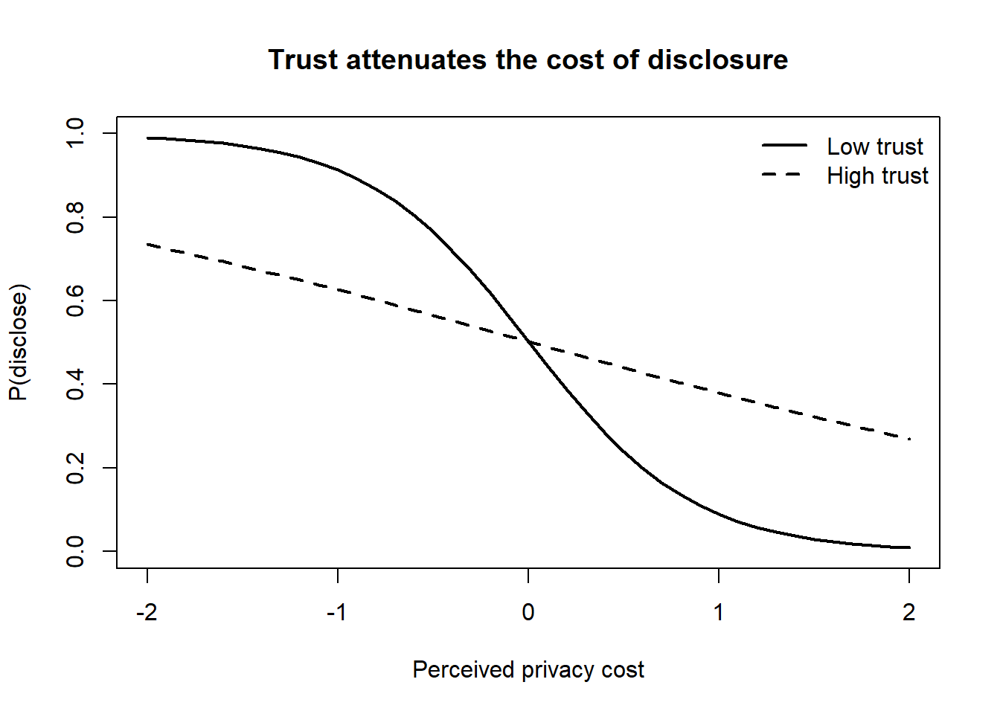
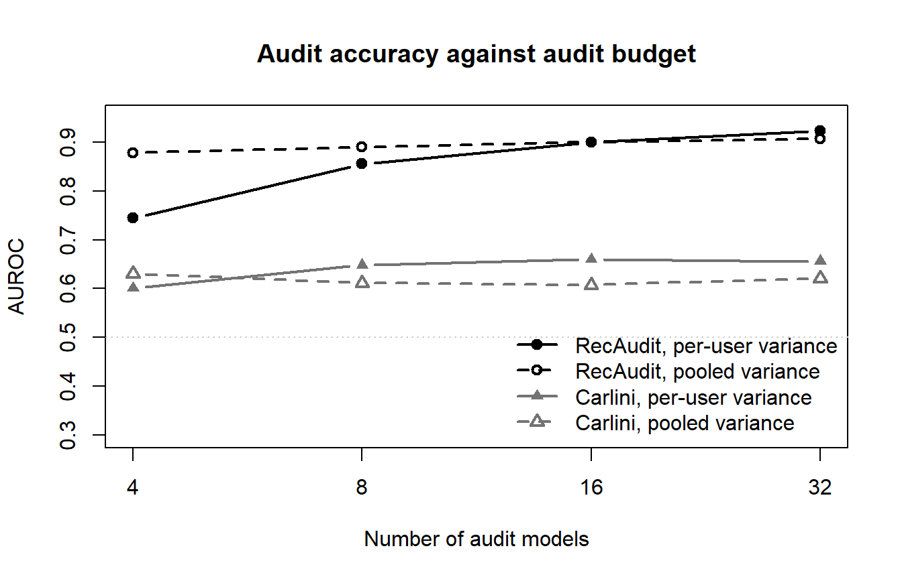

Privacy is the governance problem at the center of data-driven marketing. Every personalized recommendation, every retargeted advertisement, every loyalty program rests on a flow of personal information from the consumer to the firm—and that flow is the same thing consumers say they want to restrict. The tension is not incidental; it is structural. Firms create value by knowing their customers, and the act of knowing is precisely what consumers experience as exposure. This chapter treats privacy as a marketing construct with formal content, an economic object that firms can price and differentiate on, a behavioral phenomenon that systematically violates the predictions of rational choice, and a regulated activity whose rules reshape competition and innovation.
The chapter proceeds from definition to mechanism to evidence. We begin by fixing what privacy and privacy concern mean and how they are measured, because the measurement model determines what can be claimed. We then assemble the theoretical scaffolding—social contract, justice, exchange, control, and reactance accounts—into a single decision-theoretic frame, the privacy calculus, and confront the empirical fact that consumers do not behave as the calculus predicts: the privacy paradox. From there we examine personalization (the firm’s reason to collect data), trust and control (the levers that move the calculus), the surprising backfire of transparency (the bulletproof-glass effect), the economics of anonymity, and the regulatory regime—chiefly the European Union’s General Data Protection Regulation (GDPR)—that now constrains the whole system, together with the open problem of verifying that a trained recommender has actually forgotten a user who asked to be deleted. Throughout, the goal is to give a marketing PhD the identification detail and a senior practitioner the decision logic, with reproducible code where a model is involved.
27.1 What Privacy Is
The foundational definition in the information-privacy literature is Westin’s, who frames privacy not as secrecy but as control over access.
Privacy is the claim of individuals, groups, or institutions to determine for themselves when, how, and to what extent information about them is communicated to others. (Westin 1967)
Westin decomposes this claim into four states—anonymity, solitude, reserve, and intimacy—that together describe a person’s ability to modulate how exposed they are. The control-centric view matters because it locates privacy in the flow of information rather than in any fixed catalog of “sensitive” facts: a consumer can be entirely comfortable disclosing a fact in one relationship and feel violated disclosing the same fact in another. Consumer information privacy narrows this to the marketing context as control over the dissemination and use of consumer information—demographics, search history, profile data—where canonical violations are unwanted marketing communication, hyper-targeted advertising, and covert online tracking.
Privacy itself is a latent disposition; what researchers actually observe is privacy concern, a proxy that operationalizes consumers’ beliefs, attitudes, and perceptions about their information privacy, typically through survey scales (N. K. Malhotra, Kim, and Agarwal 2004). The distinction between the construct and its proxy is not pedantic. It is the reason the field’s central anomaly—the privacy paradox, the gap between stated concern and revealed disclosure—is even possible to state.
27.1.1 Measuring Privacy Concern
Two measurement traditions dominate. The Concern for Information Privacy (CFIP) tradition originates with Smith, Milberg, and Burke (1996) and is refined for the internet by N. K. Malhotra, Kim, and Agarwal (2004) into the Internet Users’ Information Privacy Concerns (IUIPC) instrument, which loads concern on four dimensions: information collection, unauthorized secondary use (internal and external repurposing of data), improper access, and errors (inadequate protection against inaccuracies). A parallel tradition (Sheehan and Hoy 2000) organizes concern around awareness of collection, information use, information sensitivity, familiarity with the collecting entity, and compensation. The two overlap substantially but differ in emphasis: N. K. Malhotra, Kim, and Agarwal (2004) centers the firm’s data-handling practices, whereas Sheehan and Hoy (2000) foregrounds the consumer’s relationship to the entity and the sensitivity of the specific datum.
Formally, both treat concern as a reflective higher-order construct: a latent privacy concern \(\eta\) generates correlated indicators \(x_k\) via
so the dimensions should be internally consistent and the instrument is validated by convergent and discriminant validity. This reflective specification is consequential: it licenses summing the dimensions into a single concern score and assumes the dimensions are interchangeable manifestations of one underlying trait. A formative reading—in which collection, secondary use, access, and error are distinct causes that compose concern and need not correlate—would forbid that aggregation. The field has largely adopted the reflective view by convention rather than by decisive test, a caveat worth carrying into any empirical application.1
Concern is not static. It rises over time among both older and younger consumers, and faster among older consumers, so cohort and period effects must be modeled rather than assumed away (Goldfarb and Tucker 2011). And concern is consequential for behavior: it mediates the effect of website personalization on click-through, so the same personalization can help or hurt depending on the concern it provokes (Bleier and Eisenbeiss 2015).
27.2 Theoretical Foundations
Why should a consumer ever disclose? The literature answers with five overlapping theories, which are best read not as competitors but as components of a single account: disclosure is governed by a perceived contract, evaluated for fairness, priced as an exchange, modulated by control, and resisted when it threatens autonomy. Table 27.1 collects them.
Table 27.1: Theoretical lenses on information disclosure.
Theory
Core mechanism
What governs disclosure
Representative evidence
Social contract
Norms of appropriate information flow
Firm upholds its end via added value or compensation
Social contract theory treats the firm–consumer data relationship as governed by a tacit moral contract: consumers believe marketers have kept their end when the firm returns value—through personalization or monetary compensation—commensurate with what was taken. The contract is normative, so the same data practice reads as respect or as violation depending on whether it conforms to the consumer’s expectations of appropriate flow.
Justice theory sharpens this into two fairness dimensions. Procedural justice concerns the policies and processes by which information is collected and used; fair access and fair utilization are its content, and even merely fair-appearing policies can reduce concern. Crucially, procedural fairness depends on the consumer’s comprehension: complex privacy policies that impede understanding are perceived as less fair and erode trust (Vail, Earp, and Antón 2008). Distributive justice concerns the outcome—the benefits the consumer receives for disclosing, from customized goods and faster service to outright compensation. The two dimensions generate a localized version of the paradox: consumers value the distributive outcomes marketers deliver while simultaneously feeling vulnerable about the disclosure that produced them (Awad and Krishnan 2006).
Power–responsibility (control) theory holds that the more powerful partner in a relationship—here, the data-holding firm—bears a social obligation to foster equality and trust. When consumers perceive a power imbalance as a threat to their information privacy, they respond defensively, withholding information or supplying false data. When firms lack credible privacy protections, consumers do not simply exit; they demand government intervention to restore the balance (Milberg, Smith, and Burke 2000).
Social exchange theory reduces disclosure to a cost–benefit comparison: a consumer discloses when perceived benefits—individualized offerings, free services, convenience—exceed perceived costs. The greater the personalization value a consumer senses from an exchange, the more they believe the marketer has honored the governing social contract, tying exchange and contract logics together (Chellappa and Sin 2005).
Reactance theory supplies the failure mode. Targeted, individualized communication can be experienced as a violation of autonomy; privacy concern heightens reactance (Tucker 2013), and the downstream behaviors are corrosive: communication avoidance, deliberate information falsification, negative word of mouth, and other defensive actions (White et al. 2008). Reactance is why personalization is not monotonically good—past a threshold, knowing too much about a consumer reads as intrusion rather than service.
These accounts converge on a decision-theoretic primitive. Consumer privacy behavior reflects a multidimensional, boundedly rational calculation in which the consumer weighs the expected benefits of disclosure against its expected costs. That calculation is the privacy calculus, to which we now give formal content.
27.3 The Privacy Calculus
The privacy calculus models disclosure as a utility-maximizing trade-off. Let a consumer face a decision to disclose information \(d \in \{0, 1\}\) to a firm. Let \(B(d)\) denote the perceived benefit of disclosure—personalization value, convenience, compensation—and \(C(d)\) the perceived cost—exposure, expected harm, loss of control. Disclosure utility is
\[
U(d) = B(d) - C(d),
\tag{27.2}\]
and the rational consumer discloses iff \(U(1) > U(0)\), i.e., iff the marginal benefit exceeds the marginal cost. Two structural features make the calculus tractable and testable. First, personalization value and privacy concern are approximately orthogonal inputs: a firm can raise \(B\) (better personalization) and lower the weight on \(C\) (alleviate concern) through largely independent levers (Chellappa and Sin 2005). Second, trust enters as a moderator that scales the perceived cost: where a firm is trusted, the same objective data practice carries a lower subjective \(C\), raising the probability of disclosure.
A convenient empirical implementation writes disclosure as a binary choice driven by benefit and cost indices,
where \(\Lambda(\cdot)\) is the logistic link, \(T_i\) is trust, and the interaction \(T_i \times C_i\) captures trust attenuating the cost of disclosure (\(\delta > 0\)). The estimand of interest is usually \(\gamma\), the sensitivity of disclosure to perceived cost, and \(\delta\), the degree to which trust neutralizes it. Identification is the central difficulty. Trust, benefit perception, and cost perception are all endogenous to unobserved consumer type: a consumer who is intrinsically comfortable with disclosure will report both higher trust and lower cost, biasing \(\hat\gamma\) and \(\hat\delta\) if type is uncontrolled. Credible estimates therefore exploit exogenous shifts—a policy change that alters control without altering type (Section 27.5), or randomized framing of the disclosure prompt—rather than cross-sectional correlation. Absent such variation, the coefficients are descriptive, not causal.
The following simulation makes the calculus concrete and shows how trust shifts the disclosure curve. It is illustrative—the data are generated, not observed—but the estimand and the logic are exactly those of Equation 27.3.
Code
set.seed(2025)n<-4000# Latent inputs: personalization benefit, privacy cost, and trust.benefit<-rnorm(n, 0, 1)cost<-rnorm(n, 0, 1)trust<-rnorm(n, 0, 1)# Data-generating process for disclosure (eq-disclosure-logit).alpha<-0.0; beta<-1.2; gamma<-1.4; delta<-0.9eta<-alpha+beta*benefit-gamma*cost+delta*(trust*cost)p<-1/(1+exp(-eta))disclose<-rbinom(n, 1, p)dat<-data.frame(disclose, benefit, cost, trust)fit<-glm(disclose~benefit+cost+trust:cost, family =binomial, data =dat)round(coef(summary(fit)), 3)#> Estimate Std. Error z value Pr(>|z|)#> (Intercept) 0.012 0.040 0.286 0.775#> benefit 1.278 0.052 24.750 0.000#> cost -1.420 0.056 -25.180 0.000#> cost:trust 0.916 0.056 16.472 0.000# Disclosure probability vs. perceived cost, at low vs. high trust,# holding benefit at its mean.grid<-expand.grid(cost =seq(-2, 2, 0.1), trust =c(-1, 1), benefit =0)grid$p<-predict(fit, newdata =grid, type ="response")plot(grid$cost[grid$trust==-1], grid$p[grid$trust==-1], type ="l", lwd =2, ylim =0:1, xlab ="Perceived privacy cost", ylab ="P(disclose)", main ="Trust attenuates the cost of disclosure")lines(grid$cost[grid$trust==1], grid$p[grid$trust==1], lwd =2, lty =2)legend("topright", c("Low trust", "High trust"), lwd =2, lty =c(1, 2), bty ="n")

The recovered coefficients reproduce the planted parameters, and the two curves show the substantive point: under high trust, the disclosure probability falls far more slowly as perceived cost rises—trust flattens the privacy cost gradient.
27.4 The Privacy Paradox
The calculus predicts that consumers who report high privacy concern should disclose less. They do not. The privacy paradox is the systematic disconnect between consumers’ stated privacy preferences and their actual disclosure behavior: people who declare strong concern nonetheless share sensitive personal information freely (Norberg, Horne, and Horne 2007; Kelly D. Martin and Murphy 2016). The paradox is robust and large. In the market for online behavioral advertising, only about 0.23% of U.S. ad impressions come from users who have opted out of behavioral targeting, despite survey evidence of widespread concern; opt-out users’ ad impressions earn roughly 52% less revenue than targeted impressions, implying a loss on the order of $8.58 per opted-out consumer to publishers and exchanges, and opt-out behavior concentrates among more tech-savvy, older, and wealthier populations (Johnson, Shriver, and Du 2020).
Two readings of the paradox carry different managerial implications, and the distinction is identification-relevant. The first treats the paradox as rational: concern is real, but the privacy calculus resolves in favor of disclosure because the benefits genuinely dominate. On this reading, low opt-out rates reveal that consumers price their data cheaply relative to the personalization they receive—privacy is a commodity over which consumers make a deliberate risk–benefit trade-off (Sultan, Rohm, and Gao 2009). The second treats the paradox as behavioral: stated and revealed preferences diverge because disclosure decisions are constructed in the moment and are highly malleable, so the survey measures a disposition that the choice context overrides. The behavioral reading has the stronger evidence. Consumers trade away privacy in response to the architecture and framing of the choice (Adjerid, Acquisti, and Loewenstein 2019; Brandimarte, Acquisti, and Loewenstein 2013), to small inconveniences or incentives that should be economically negligible (Athey, Catalini, and Tucker 2017), and to perceived control over their information even when that control does not reduce actual exposure (Mourey and Waldman 2020; Tucker 2013).
The behavioral reading is sharpened by Lin and Strulov-Shlain (2025), who show that opt-out defaults and lower price anchors reduce consumers’ stated valuations of their own Facebook data by 22% and 37% respectively—magnitudes incompatible with a stable underlying valuation. The same study surfaces a consequence that should worry any firm using disclosure data to learn about its market: framing effects fall disproportionately on consumer segments with lower privacy valuations, so optimizing choice architecture to maximize data volume systematically biases who is represented in the data. The volume–representativeness trade-off is a direct cost of exploiting the paradox.
A caution follows for measurement. If disclosure is constructed and framing-sensitive, then survey-based privacy concern is a weak predictor of behavior, and any model that uses stated concern as a proxy for revealed cost (the \(C_i\) in Equation 27.3) inherits that weakness. This is why the strongest empirical privacy work is built on revealed behavior under exogenous variation rather than on self-report.
27.5 Personalization, Trust, and Control
Personalization is the firm’s reason to collect data, and its effect on consumer response is genuinely mixed. Personalization is the ability to tailor products, messages, and experiences to an individual based on personal and preference information; it depends jointly on the firm’s ability to acquire and process consumer data and on the consumer’s willingness to supply it (Chellappa and Sin 2005). Its benefits are real—fit, proactive delivery, and elevated switching costs that breed loyalty, because a consumer who has invested in personalizing one provider must re-disclose to switch (Alba et al. 1997). But personalization is double-edged, and the edge that cuts the firm is privacy concern. The pivotal moderator is how the information was obtained: whether the consumer provided it voluntarily or it was gathered covertly.
27.5.1 The Personalization–Performance Curve
The effect of personalization intensity on advertising response is theorized as non-monotonic, with two opposing forces. The positive force is elaboration: a self-relevant message invites central-route processing, raising attention, elaboration, and attitude strength, so more personalization yields more favorable response (Cho and as- 2004; Petty and Cacioppo 1986). The negative force is persuasion knowledge: when a consumer recognizes that a brand is trying to persuade them—and conspicuous use of personal data is exactly such a cue—they activate persuasion knowledge that discounts the appeal, and the discounting is amplified by privacy concern through reactance (Friestad and Wright 1994; White et al. 2008). The net effect can be U- or inverted-U-shaped depending on which force dominates, and the empirical record is correspondingly split: many studies find personalization lifts brand and campaign response and coupon redemption (Bauer and Lasinger 2014; N. Y. Kim and Sundar 2012; Tam and Ho 2005; Maslowska, Putte, and Smit 2011; D. J. Xu, Liao, and Li 2008; Chu 2011), while others find that explicitly signaling data use backfires.
The cleanest demonstration of the negative branch is Wattal et al. (2012): consumers respond favorably to product-based personalization, where data use is not made salient, but respond unfavorably when a firm is explicit about using personally identifiable information—a personalized greeting, for instance—with familiarity with the firm attenuating the backlash. The mechanism is reactance triggered by salient surveillance, not personalization per se.
Whether a tradeoff between personalization and privacy actually binds is itself contested. Several studies find no tradeoff once control is present. Walrave et al. (2016) hypothesize an optimal-moderate level of personalization in social network advertising but find the highest-personalization condition produces the most positive response, with privacy concern failing to dampen it—plausibly because the personalization never crosses the threshold that activates persuasion knowledge. The deeper resolution comes from control.
27.5.2 Control as the Decisive Lever
The single most important moderator of the personalization–privacy relationship is perceived control. Tucker (2013) provides the cleanest causal estimate: exploiting Facebook’s introduction of enhanced privacy controls as a natural experiment in a difference-in-differences design, she finds that personalized advertising was ineffective before users gained control over their personal information but became roughly twice as effective afterward. The interpretation is sharp—personalization and privacy do not trade off when consumers believe they control their data; control converts intrusion into service.
The mechanism generalizes. Perceived control is the mediator through which three distinct interventions—consumer self-protection, industry self-regulation, and government mandates—reduce privacy concern (H. Xu et al. 2012). But control has a dark side that the calculus does not anticipate. Greater perceived control can induce consumers to disclose more, leaving them objectively more exposed: the feeling of control reduces the felt cost of disclosure even when the actual risk is unchanged or worse (Brandimarte and Acquisti 2012). This is the control paradox, and it is the behavioral-economics counterpart to the privacy paradox—control changes the subjective\(C\) in Equation 27.2 without changing the objective one.
27.5.3 Trust as the Proactive Complement
Where control and concern-reduction are largely reactive—they respond to a privacy threat—trust is a proactive mechanism that firms build before any threat materializes (Wirtz and Lwin 2009). Trust is decisive precisely in the settings where privacy is most at stake: when retailers deploy personalized or targeted material, trust is what assuages the accompanying privacy worry (Aguirre et al. 2016), and trust in the vendor positively moderates the use of personalized services, so trust building is a direct lever on data acquisition (Chellappa and Sin 2005).
Firms have concrete instruments to signal trustworthiness. Privacy seals and similar signals raise consumers’ willingness to disclose and improve perceptions of the organization (Miyazaki and Krishnamurthy 2002). Privacy policies are read—about 84% of a sample of 2,500 consumers reported reading them—and reading them shifts trust in the firm (Milne and Culnan 2004), with policies serving as a usable proxy for a firm’s transparency and control that is, in turn, related to firm performance and consumer behavior (Kelly D. Martin, Borah, and Palmatier 2017). Consumers will even pay for privacy: they purchase more from websites with more protective privacy practices, revealing a positive willingness to pay for protection (Tsai et al. 2011). Yet the relationship between disclosure-of-policy and behavior is not simple. Broadcasting a privacy policy can reduce disclosure, and consumers disclose more sensitive information when they believe others already have—social proof lowering the perceived risk (Acquisti, John, and Loewenstein 2012). Privacy-policy statements raise the benevolence and integrity components of trust without necessarily lifting purchase intent. These frictions set up the central behavioral surprise of the chapter.
27.6 The Bulletproof-Glass Effect
A reasonable manager expects that telling consumers their data are protected will make them feel safer and buy more. The expectation is wrong, and the reason is instructive. Brough et al. (2022) identify the bulletproof-glass effect: just as a sheet of bulletproof glass in an unexpected setting makes people feel less safe by implying that danger is present, a privacy notice can make consumers feel more vulnerable—decreasing trust and purchase interest—even when the notice objectively emphasizes protection. The label inverts the standard view that transparency about data handling reduces perceived vulnerability (Kelly D. Martin, Borah, and Palmatier 2017).
The mechanism turns on a contract distinction. Managers conceive of privacy notices as formal legal contracts that bind the firm’s data conduct, and expect that formality to reassure. But consumers default to reading privacy as a social contract governed by norms of appropriate flow; when a firm respects those norms it earns trust and purchase intent, and when it violates them it earns negative word of mouth (McCole, Ramsey, and Williams 2010; Eastlick, Lotz, and Warrington 2006; Miyazaki 2009; T. Kim, Barasz, and John 2019). Introducing a formal contract where a social one was expected undermines trust, exactly as a formal contract reduces cooperation in a multi-round trust game relative to no contract at all (D. Malhotra and Murnighan 2002). The notice signals that the relationship requires legal protection, which implies the relationship is not safe.
Brough et al. (2022) bound the effect with two informative moderators. First, the backfire disappears when consumers already expect potential harm: priming a-priori distrust, or operating in a context where danger is anticipated, removes the surprise that drives the bulletproof-glass reaction. Second, the backfire disappears when the notice carries benevolence cues. Trust has two routes—benevolence (affective, “they care”) and competence (cognitive, “they are able”)—and benevolence-trust leads consumers to read a notice as a social contract rather than a formal one. Operationally, a notice’s affective-versus-cognitive content can be scored from its text—e.g., via the proportion of affect words versus cognition words—so the benevolence remedy is measurable, not merely conceptual. Figure 27.1 traces the logic.
flowchart TD
A[Privacy notice shown] --> B{How is it read?}
B -->|As a formal contract| C[Implies danger is present]
C --> D[Increased perceived vulnerability]
D --> E[Lower trust and purchase interest]
B -->|As a social contract| F[Implies norm-respecting relationship]
F --> G[Maintained or increased trust]
H[Moderator 1: harm already expected] --> B
I[Moderator 2: benevolence cues in text] --> B
H -. removes surprise .-> F
I -. shifts to affective trust .-> F
Figure 27.1: The bulletproof-glass effect: why a protective privacy notice can lower purchase interest, and the two moderators that switch the effect off.
The effect extends to the conspicuous absence of a notice. Using Apple’s App Store privacy “nutrition labels”—mandated in December 2020 after a period in which only about half of apps voluntarily linked a privacy policy (Story, Zimmeck, and Sadeh 2018)—Brough et al. (2022) show that an app whose privacy information is conspicuously present or conspicuously absent suffers reduced downloads relative to apps where privacy is simply not at issue. Drawing attention to privacy, in either direction, can depress demand. This reframes a large body of evidence: when consumers notice their data were collected without consent, click-through falls (T. Kim, Barasz, and John 2019; Aguirre et al. 2015), and consumers prefer to buy from sites with stronger protection (Tsai et al. 2011)—but the act of foregrounding privacy is itself a treatment with a cost. The practical lesson is not “say less”; it is that privacy communication is a designed signal whose framing (formal versus benevolent, salient versus background) determines its sign.
27.7 The Economics and Organizational Stakes of Privacy
Privacy is also a strategic and economic variable, not only a psychological one. For the firm, privacy is a dimension of differentiation: a firm can compete on protection the way it competes on quality or price (Casadesus-Masanell and Hervas-Drane 2015; Rust, Kannan, and Peng 2002). The financial logic of privacy failures—data breaches, hacking intrusions, exposures—runs the other way and is well documented (A. Malhotra and Kubowicz Malhotra 2011; Kelly D. Martin, Borah, and Palmatier 2017). The key organizational result is that the damage a breach does to firm performance is mitigated when the firm has previously provided transparency and control: these compensate for the vulnerability the breach exposes and blunt its impact on performance (Kelly D. Martin, Borah, and Palmatier 2017). Privacy posture is thus an insurance policy whose premium is paid in advance through transparent, control-granting practices.
The economics of anonymity formalize a subtler point: more privacy is not unconditionally good for consumers. Conitzer, Taylor, and Wagman (2012) analyze a monopolist facing a continuum of heterogeneous consumers who can choose to remain anonymous—avoiding recognition as prior customers—possibly at a cost. The model yields a sequence of counterintuitive results. When anonymity is freely available, every consumer individually prefers to take it, and that universal anonymity is precisely the outcome that maximizes the monopolist’s profit (because it prevents the price-discrimination that recognition would enable against the firm’s interest in this setting). Consumers can benefit from a higher cost of anonymity—but only up to a threshold, beyond which the effect reverses and harms them. And it is frequently harmful to consumers when the monopolist or an unaffiliated third party controls the cost of anonymity. The lesson for policy is that the allocation of control over the price of privacy matters as much as the level of privacy itself.
On the regulatory-economics of breaches, Kelly D. Martin and Murphy (2016) argues that the low likelihood of litigation, combined with the rarity of breaches in some industries, gives firms a standing incentive to lobby for modest consumer-information-privacy regulation, keeping privacy management under firm control rather than statutory mandate. That political-economy equilibrium is exactly what comprehensive regulation disrupts.
Most of this literature infers the value of privacy from stated concern or disclosure choices. Einav et al. (2026) instead price it from behavior in a high-stakes setting. An Israeli reform in August 2015 granted plaintiffs anonymity in court rulings on personal-injury claims, removing the risk that rejecting a settlement offer would publicly expose health and earnings information. Using car-accident claims handled by the major insurers from 2011 to 2020, and comparing personal-injury claims with property-damage claims the reform did not touch, a difference-in-differences design finds that payments on personal-injury claims rose by 12% to 17%. The authors read that increase as the implicit price claimants had been paying, in lower settlements, to avoid disclosure. The baseline specification gives 0.132 to 0.166 log points (standard error 0.008), and an event study shows a flat pre-period followed by a gap that grows to about 35% by 2020 as anonymity rose from roughly 20% to nearly 100% of rulings. On the pre-reform mean of 33,000 NIS, 12% to 17% is about 3,960 to 5,610 NIS, or 42% to 60% of the average monthly salary. The effect sits in settlement amounts and not in court judgments, so it is not a change in what judges award. It is concentrated among working-age claimants (21% versus a small, insignificant 3.4% for those over 60), among cases with longer durations, and among claimants represented by top-ranked law firms, which is where the loss from exposure should be largest. Gender, income and religion show no statistically significant differences. Estimates stay between 12% and 24% across alternative cutoffs, samples, and reweightings for rising wages, and excluding accidents that generated both kinds of claim raises it to 24%. This is a revealed-preference counterweight to the privacy paradox discussed earlier: when the cost of exposure is concrete and the choice is consequential, people pay for privacy, and the result bears on customer interactions where sensitive information is involved.
27.7.1 Privacy Stewardship: From Risk to Opportunity
The evidence so far mostly prices privacy on the downside: what a breach costs, what consumers pay to avoid exposure, how much transparency and control blunt the damage. Moffett et al. (2026) start from the other side. They introduce customer data privacy stewardship, a customer-facing, strategic approach to responsible data privacy management, and argue that privacy is a strategic opportunity rather than only a risk to be managed. The posture they argue against is the one this section has described so far. Strong privacy practices are costly, both in money and in how much value the firm can extract from customer data, so many firms treat privacy as exposure to be minimized and leave it to legal and compliance functions. University of Washington coverage of the research describes stewardship as resting on three commitments: privacy practices that customers can see rather than fine print, accountability for customer data that goes beyond legal compliance, and practices built into how the business operates rather than announced once (University of Washington Foster School of Business 2026). Across three multimethod studies, the authors find a positive relationship between stewardship and performance at three levels: the firm, the brand, and the customer.
The more useful contribution is the account of when stewardship pays. The moderators are organized around two customer perceptions. The first is the firm’s perceived motive. Data dependence weakens the relationship and brand affinity strengthens it. A firm whose business runs on monetizing personal data struggles to convince customers that a privacy commitment is sincere, while a well-liked brand gets the benefit of the doubt. The second is perceived data risk. A history of data breaches strengthens the relationship and strong industry-level protections weaken it, so stewardship is worth more where customers have reason to worry and less where they assume regulation already protects them. The authors’ university news release gives social media platforms as the data-dependent case and health care and finance as the heavily protected industries (Irwin-Gish 2026). Two customer perceptions carry the effect: perceived privacy benevolence, the sense that the firm cares about protecting its customers’ data, and privacy concerns, which stewardship lowers. Figure 27.2 lays out the model.
flowchart LR
PS["Customer data privacy<br/>stewardship"] -->|"raises"| BEN["Perceived privacy<br/>benevolence"]
PS -->|"lowers"| CON["Privacy concerns"]
BEN -->|"raises"| PERF["Performance: firm,<br/>brand, customer"]
CON -->|"lowers"| PERF
MOT["Perceived motives:<br/>data dependence weakens,<br/>brand affinity strengthens"] -.->|"moderates"| PERF
RISK["Perceived data risk:<br/>breach history strengthens,<br/>industry protections weaken"] -.->|"moderates"| PERF
Figure 27.2: Customer data privacy stewardship. Stewardship raises perceived privacy benevolence and lowers privacy concerns, and both carry its positive relationship with firm, brand, and customer performance. Perceived motives and perceived data risk moderate the relationship.
The model links to three earlier results in this chapter. The breach moderator mirrors Kelly D. Martin, Borah, and Palmatier (2017). There, transparency and control put in place before a breach cushion the performance damage when it comes. Here, a breach history makes a later stewardship commitment more valuable, presumably because customers then have a concrete reason to care. The benevolence mediator matches the benevolence route out of the bulletproof-glass effect (Brough et al. 2022): in both papers, privacy communication works when customers read it as care rather than as the firm’s legal self-protection. The same coverage reports that the authors analyzed the language of company privacy announcements. Defensive, threat-oriented framing tended to raise customer anxiety, while forward-looking, care-oriented language went with better outcomes (University of Washington Foster School of Business 2026). Finally, the motive moderator qualifies the privacy-as-differentiation argument of Casadesus-Masanell and Hervas-Drane (2015): the same commitment buys less for a firm whose revenue depends on the data it promises to protect.
The firm-level analysis covers 360 company announcements of new or improved privacy practices over 14 years.
Markets rewarded those announcements, and more so for firms with a prior breach.
At the brand level, data from Osano and YouGov linked strong privacy reputations to a 12.31% increase in customer patronage.
Experiments traced the effect to higher trust and lower concern, which raised purchase intent.
Read as a research design, the three levels answer different questions and face different threats. Firms choose whether and when to announce, so a market response to an announcement measures what investors expected the commitment to be worth, net of anything they had already anticipated, and the firms that announce are not a random draw. A brand-level link between privacy reputation and patronage is exposed to omitted brand quality and to reverse causality, the same worries that run through the marketing–finance literature. Experiments identify the benevolence and concern mechanism cleanly but in a stylized setting. The paper’s strength is that the three designs agree in sign and the moderators behave as the motive and risk account predicts, a pattern that confounding has a harder time producing than a single main effect. (Only the published abstract, university news coverage, and a practitioner summary of the companion Harvard Business Review article were accessible when this section was written. The paper’s measure of stewardship, its scale items, sample sizes, and estimates are not reported here, and the figures above come from those secondary summaries rather than from the paper’s tables.)
27.8 Privacy in Society and Regulation
Privacy regulation has historically diverged across jurisdictions, and the divergence shapes everything downstream. In the United States, the Federal Trade Commission (FTC) has regulated consumer information privacy through two frameworks: a notice-and-choice model built on Fair Information Practice Principles—firms must disclose their practices and offer choice—and a harm-based model that intervenes only where demonstrable harm occurs. The European Union’s earlier Data Protection Directive was more comprehensive than the U.S. regime, yet the de facto default on both sides remained industry self-regulation, more prevalent in the United States than in Europe (Kelly D. Martin and Murphy 2016). The consequences of even the earlier European regime were real: advertising effectiveness fell measurably after the Data Protection Directive was implemented, and privacy concern rose over time across age groups (Goldfarb and Tucker 2011).
The regime-defining event is the General Data Protection Regulation (GDPR), in force since 2018, which shifts the legal basis of data processing toward enhanced, transparent consent and exports its model to the California Consumer Privacy Act and Brazil’s Lei Geral de Proteção de Dados. GDPR’s effects fall into three areas: consent and disclosure behavior, market structure and innovation, and the persistence of tracking. Table 27.2 summarizes the evidence.
Table 27.2: Empirical evidence on the effects of GDPR.
Domain
Finding
Source
Consent behavior
GDPR-compliant consent raises opt-in across data types; consumers still restrict sensitive data
The consent findings reveal a tension. Enhanced, GDPR-compliant consent increases opt-in for many data types and uses, and crucially the resulting gains—higher sales, more effective marketing communication, greater contractual lock-in—accrue to firms that can target the receptive households that opted in (Godinho de Matos and Adjerid 2022). Consumers do not, however, increase allowances uniformly; they continue to restrict permissions for sensitive information, exercising exactly the norm-governed, context-dependent control that social-contract theory predicts. Yet other work finds consent largely insensitive to how it is requested: people share data freely regardless of request format, and the accompanying explanations of collection and use are not read carefully (Kreuter et al. 2020)—the privacy paradox reasserting itself under regulation. The design margin still matters at the firm level: a mix of persuasive and informative cues yields more opt-ins than informative cues alone, and firms with offline presence and heavy data dependence lean on persuasive cues while GDPR-compliance-sensitive firms adopt more balanced formats (D’Assergio et al. 2024). Transparency improves comprehension of data processing without moving acceptance rates (Betzing et al. 2020), echoing the bulletproof-glass lesson that more information is not mechanically more reassuring.
Disclosure mandates also reach the parties who must comply with them, not only the consumers they inform—a margin that evaluation-side studies of labels are structurally unable to see. In the generative-AI setting, creators who anticipate that their use of AI will be labeled withdraw effort from the creative work itself, so the disclosed artifact is worse than the one the rule was written to make legible (Jussupow et al. 2026). The transferable point for privacy research is that a transparency requirement is an intervention on production as well as on perception: consent screens, provenance labels, and data-practice disclosures change what firms build and how they build it, and a design that holds the firm’s behavior fixed while randomizing the notice measures only half the policy (Section 69.8).
The market-structure findings are where GDPR’s costs surface, and they expose a privacy–innovation tradeoff. In the Google Play ecosystem (4.1 million apps, 2016–2019), GDPR forced roughly a third of apps to exit and cut the rate of new app introduction by half, reducing consumer surplus and app usage (Janssen et al. 2022). The competitive incidence is two-sided. Compliance costs are anti-competitive: they raise barriers to entry, increase exit, and fall hardest on smaller firms. But the challenge of data collection under GDPR is also pro-competitive: fines scale with size and so bite larger firms harder, and established firms find it more difficult to ensure third-party compliance across their data supply chains. The net is heterogeneous—GDPR raises volatility (a proxy for competitive churn) in the free-app market while reducing it in the paid market (Kelly D. Martin, Borah, and Palmatier 2017). And enforcement has limits: third-party tracking changed little after GDPR, with a few large gatekeepers retaining disproportionate tracking capability both before and after (Kollnig et al. 2021).
For empirical work on regulation, the measurement bottleneck is detecting and coding privacy-relevant text at scale. Automated classifiers can identify GDPR-relevant privacy-policy content, enabling large-sample study of disclosure practices and their correlates (Chang et al. 2019). The methodological point connects privacy research to the broader text-analytics toolkit and makes the regulatory-compliance literature tractable beyond hand-coded samples.
27.9 Where to Put Differential Privacy in a Targeting Workflow
The regulatory evidence above treats privacy as a property of data collection: what a firm may gather, and with whose consent. Targeting adds a risk that survives lawful collection. When a firm mails a coupon, a retention offer, or a catalog to a customer because a model scored them as responsive, the decision is itself information. A customer who receives a mailing of baby products learns, and so does anyone who sees the mailing, what the model inferred. Ponte et al. (2026) call this targeting privacy risk. It grows as European law tightens around sensitive traits: the Digital Services Act restricts targeting on sensitive attributes even with consent, and rulings of the Court of Justice of the European Union in 2022 and 2023 extend “sensitive” to data that reveal such traits indirectly. A targeting score can be exactly such a proxy.
Differential privacy gives the risk a quantitative form (Dwork and Roth 2014). A randomized procedure is \(\varepsilon\)-differentially private if changing any one customer’s data changes the probability of any output by at most a factor of \(e^{\varepsilon}\). A small \(\varepsilon\) is strong protection, because no single record moves the output much; \(\varepsilon = 0\) means the output does not depend on the data at all. Two properties make the definition usable in a marketing pipeline. Under post-processing, anything computed from a differentially private output, without going back to the raw data, keeps the same guarantee. Under composition, several private analyses of the same customers spend privacy additively: the total \(\varepsilon\) is at most the sum of the parts (Theorem 3.14 in Dwork and Roth (2014)).
27.9.1 Three Places to Add the Noise
The paper’s question is not whether to protect a targeting system but where. A targeting workflow built on conditional average treatment effects (CATEs) has three areas where noise can enter, and each has a natural strategy (Table 27.3).
Table 27.3: Three places to implement differential privacy in a CATE-based targeting workflow, following Ponte et al. (2026).
Apply randomized response (Warner 1965) to each target or do-not-target decision
DP-CATE shows post-processing doing real work. The R-learner first estimates two nuisance functions, the expected outcome given covariates and the propensity score, and then fits the CATE by regressing outcome residuals on treatment residuals (Nie and Wager 2021). Differentially private stochastic gradient descent (DP-SGD) clips each customer’s gradient, at a bound of 4 in the paper, and adds Gaussian noise scaled to that bound (Abadi et al. 2016). Where an earlier proposal adds noise at every stage of CATE estimation, the authors add it only when training the final CATE network and let post-processing carry the guarantee downstream: the targeting scores, the policy built from them, and any reuse of the scores in later campaigns are covered at no extra privacy cost. A reader adapting the design should check how the nuisance fits, which are functions of every customer’s data, enter the per-customer gradients of that final step, because that is where the accounting of what is protected has to be done.
DP-policy is the simplest of the three. For each customer, keep the non-private decision with probability \(e^{\varepsilon}/(1+e^{\varepsilon})\) and flip it with probability \(1/(1+e^{\varepsilon})\). The ratio of the two is exactly \(e^{\varepsilon}\), which is the definition of \(\varepsilon\)-differential privacy for a single binary output. This is the randomized response device that survey researchers use for sensitive questions: a respondent can answer truthfully because any single answer might be the coin’s (Warner 1965). The flip probability is each customer’s plausible deniability. It is about 49% at \(\varepsilon = 0.05\), 38% at 0.5, 27% at 1, 5% at 3, and 1% at 5.
27.9.2 What the Field Experiment Shows
The authors compare the three strategies in a field experiment at a European retailer that mailed physical discount coupons. The models were trained on a randomized experiment with 356,686 customers (95% treated, 5% control), 15 covariates, and a five-week outcome window, and the resulting policies were evaluated on 391,289 different customers, 747,975 in all. Each strategy was run 100 times. Profit follows Hitsch, Misra, and Zhang (2024):
where \(d(X_i) \in \{0, 1\}\) is the targeting decision, \(\tau(X_i)\) the CATE, \(m\) the margin, and \(c\) the contact cost. With \(m = 1\) and \(c = 0\), as in the paper, a policy’s value beyond the baseline is the sum of the CATEs of the customers it targets.
Averaged over the privacy levels studied, the out-of-sample profit uplift over random targeting was €123,786 without privacy protection. Noise on the inputs kept €11,301 of it, DP-CATE €12,571 (11% more than input noise), and DP-policy €57,361, about 4.5 times DP-CATE and 46% of the unprotected uplift. Protecting the decision, the step furthest from the raw data, cost the least. DP-CATE also attenuated the estimated heterogeneity and biased the average treatment effect downward, the signature of regularization: noisy gradients pull the network toward a flat CATE surface, and a flat surface ranks customers no better than chance.
The paper flags two limits on reading these numbers. The first has a consequence that is our reading rather than the paper’s. The field data contain no true CATEs, so the evaluation uses the non-private model’s estimates in their place. DP-policy starts from that model’s own decisions and flips some of them, whereas DP-CATE re-estimates the ranking, so a benchmark built from the non-private model sits closer, by construction, to the strategy that keeps its decisions. Second, \(\varepsilon\) is not comparable across the three areas, because each protects a different object: a covariate vector, a fitted model, a decision. Equal \(\varepsilon\) is equal formal protection of different things, and the field comparison prices three different promises rather than one promise three ways.
27.9.3 Protecting the Decision: A Closed Form
DP-policy is simple enough to solve, which makes its trade-off transparent. Suppose a firm can contact a share \(\phi\) of \(N\) customers, targets the \(\phi N\) with the largest CATEs, and CATEs are exponential with rate \(\lambda\) (mean \(1/\lambda\)). By memorylessness, the CATEs above the cutoff \(-\ln\phi/\lambda\) average \((1 - \ln\phi)/\lambda\), so the top \(\phi\) hold a CATE mass of \(N\phi(1-\ln\phi)/\lambda\) and everyone else holds \(N(1 - \phi + \phi\ln\phi)/\lambda\). Randomized response keeps each top customer with probability \(p_\varepsilon = e^{\varepsilon}/(1+e^{\varepsilon})\) and adds each other customer with probability \(1 - p_\varepsilon\), so
Equation 27.5 ignores the budget. Randomized response flags \(N_1 = N[\phi p_\varepsilon + (1-\phi)(1-p_\varepsilon)]\) customers in expectation, which exceeds \(\phi N\) whenever \(\phi < 0.5\), and the paper corrects for this: it scales profit by \(\phi N / N_1\) when \(\phi \le 0.5\) and adds random draws when \(\phi > 0.5\). We implement the correction as contacting a random \(\phi N\) of the flagged customers when too many are flagged, and topping up with randomly chosen unflagged customers, each carrying the average CATE of the unflagged pool, when too few are. Corrected profit then runs from random targeting, \(N\phi/\lambda\), at \(\varepsilon = 0\) to the non-private \(N\phi(1-\ln\phi)/\lambda\) as \(\varepsilon\) grows.
The budget is where the asymmetry lives. Randomized response treats every customer alike, but the two pools are not alike in size. At \(\varepsilon = 1\) and \(\phi = 0.01\), about 27% of all customers are flagged, and fewer than 3% of them belong to the true top 1%; at \(\phi = 0.1\), about 23% of the flagged customers are true targets. A narrow campaign therefore pays far more for the same \(\varepsilon\) than a broad one.
The code below implements the corrected formula, checks it against a simulation that draws exponential CATEs, applies randomized response to the top-\(\phi\) policy, and enforces the budget customer by customer, and then computes the privacy elasticity of targeting profit, \(\partial \ln \mathbb{E}[\Pi_\varepsilon] / \partial \ln \varepsilon\).
Code
# Expected profit of a top-phi targeting policy protected by randomized response# (DP-policy) when CATEs are Exponential(lambda), with margin m = 1 and cost c = 0.# Profits are in units of N / lambda, so lambda drops out of every ratio below.dp_flip<-function(eps)1/(1+exp(eps))# probability a decision flipsdp_profit<-function(eps, phi){p<-1-dp_flip(eps)# decision kepttop<-phi*(1-log(phi))# CATE mass in the top phibot<-1-phi+phi*log(phi)# CATE mass in the restraw<-p*top+(1-p)*bot# before the budget correctionn1<-phi*p+(1-phi)*(1-p)# expected share targetedif(phi<=0.5){raw*phi/n1# too many targeted: drop at random}else{left<-(1-p)*top+p*bot# CATE mass among the untargetedraw+(phi-n1)*left/(1-n1)# too few: add random customers}}# Monte Carlo check: draw CATEs, protect the top-phi decisions by randomized# response, enforce the budget of N * phi contacts, and sum the CATEs contacted.set.seed(2026)eps_grid<-c(0.05, 0.5, 1, 3, 5)check<-expand.grid(eps =eps_grid, phi =c(0.01, 0.1, 0.3, 0.7))N<-5000; R<-120sim<-matrix(0, nrow(check), R)for(rin1:R){tau<-sort(rexp(N), decreasing =TRUE)# customers ranked by CATEu<-runif(N)# one coin per customerfor(jinseq_len(nrow(check))){K<-round(N*check$phi[j])d<-xor(seq_len(N)<=K, u<dp_flip(check$eps[j]))# randomized responses<-which(d)if(length(s)>K)s<-s[sample.int(length(s), K)]if(length(s)<K){o<-which(!d)s<-c(s, o[sample.int(length(o), K-length(s))])}sim[j, r]<-sum(tau[s])/N}}check$gap<-rowMeans(sim)/mapply(dp_profit, check$eps, check$phi)-1print(round(100*tapply(abs(check$gap), check$phi, max), 1))# max % gap by phi#> 0.01 0.1 0.3 0.7 #> 2.6 1.2 0.4 0.5# Privacy elasticity of targeting profit, d ln Profit / d ln epsdp_elasticity<-function(eps, phi, f=dp_profit, h=1e-5)(log(f(eps*exp(h), phi))-log(f(eps*exp(-h), phi)))/(2*h)dp_net<-function(eps, phi)dp_profit(eps, phi)-phi# profit above randomcat(sprintf("Elasticity at eps = 1, phi = 0.10: %.2f (profit net of random: %.2f)\n",dp_elasticity(1, 0.10), dp_elasticity(1, 0.10, f =dp_net)))#> Elasticity at eps = 1, phi = 0.10: 0.34 (profit net of random: 1.35)for(phiinc(0.10, 0.01)){pk<-optimize(dp_elasticity, c(0.5, 8), phi =phi, maximum =TRUE)$maximumcat(sprintf("phi = %.2f: elasticity peaks at eps = %.2f (flip probability %.1f%%)\n",phi, pk, 100*dp_flip(pk)))}#> phi = 0.10: elasticity peaks at eps = 2.44 (flip probability 8.0%)#> phi = 0.01: elasticity peaks at eps = 4.28 (flip probability 1.4%)
The formula and the simulation agree to within 2.6% in every cell, and to within 1.2% once \(\phi \ge 0.1\); the largest gaps are at \(\phi = 0.01\), where each draw contacts only 50 customers. The elasticity at \(\varepsilon = 1\) and \(\phi = 0.1\) is 0.34: a 1% loosening of \(\varepsilon\) raises expected targeting profit by about 0.34%. That is the value the paper reports, and the reproduction pins down which profit it refers to: total profit, including what random targeting would earn. Measured on profit above random targeting, the same elasticity is 1.35. Without the budget correction the elasticity even turns negative, because the customers outside the top 10% hold more CATE mass in total than those inside it, so un-flagging them lowers the uncorrected sum faster than keeping true targets raises it.
The paper also reports two tipping points: \(\varepsilon = 2.43\) for \(\phi = 0.1\) (a flip probability of 8.1%) and \(\varepsilon = 4.28\) for \(\phi = 0.01\) (1.4%). In the closed form, both coincide with the \(\varepsilon\) at which the elasticity peaks, 2.44 and 4.28; the small gap at \(\phi = 0.1\) is consistent with rounding or a grid search. Below the peak, each proportional loosening of privacy buys a rising proportional gain in profit; above it, the returns to giving up privacy diminish. Table 27.4 translates the same formula into the share of the non-private uplift that DP-policy keeps.
Table 27.4: Share of the non-private profit uplift (profit above random targeting) that DP-policy keeps in the closed-form model with exponential CATEs and the budget correction, by privacy level and the share of customers targeted. The flip probability is 1/(1 + exp(epsilon)).
epsilon
Flip probability
phi = 0.01
phi = 0.10
phi = 0.30
0.05
48.8%
0%
1%
2%
0.50
37.8%
1%
6%
16%
1.00
26.9%
2%
15%
34%
3.00
4.7%
16%
66%
85%
5.00
0.7%
60%
94%
98%
At \(\varepsilon = 1\), a campaign that contacts 30% of customers keeps 34% of its uplift, one that contacts 10% keeps 15%, and one that contacts 1% keeps 2%. At \(\varepsilon = 3\) the three keep 85%, 66%, and 16%. The table is a stylized model, not a forecast of the field results, which depend on the true distribution of CATEs and on the campaign’s budget. What it teaches is the shape: protection at the decision stage is cheap for broad campaigns and expensive for narrow ones.
27.9.4 When Each Strategy Wins
The field ranking is not universal. In simulations with the data-generating process of Nie and Wager (2021) (10,000 customers, 10 covariates), DP-CATE beats DP-policy for \(\varepsilon\) below 5. At strict privacy (\(\varepsilon = 0.05\)), DP-CATE’s profit rises with the number of customers and falls with the number of covariates, with confounding, and with complex or heavy-tailed CATE distributions, while DP-policy’s profit barely moves with any of them. In a data-generating process built to mimic the field data, DP-CATE is no better than random at 10,000 customers, improves at 100,000, and beats DP-policy at one million customers, and then only for \(0.05 \le \varepsilon
\le 1\). The authors attribute this to what Ponte et al. (2024) call the “Where’s Waldo” effect. The intuition is that in a larger crowd each record moves a model less, so the noise needed to hide any one customer costs less accuracy.
That scale dependence is the paper’s policy point. Protecting inputs or training favors large firms, whose profit under privacy grows with their customer base, which cuts against the intent of rules such as the Digital Services Act. DP-policy costs every firm the same percentage of profit whatever its size and needs nothing more than a random number per decision. The authors recommend \(\varepsilon\) between 0.5 and 4.28, and note that a firm can offset a stricter \(\varepsilon\) by targeting more customers, which is cheap when a contact is a catalog (around €2 in their example) and expensive when it is a retention offer (around €15).
Two further points matter for anyone designing such a system. Composition cuts both ways: a DP-CATE score trained once can be reused across campaigns at no extra privacy cost, whereas decisions re-randomized for each campaign spend \(\varepsilon\) every time: twelve monthly campaigns at \(\varepsilon = 1\) spend up to 12 in total, and an observer who sees all twelve can average away much of the flipping. And \(\varepsilon\) can be read as continuous consent. Binary consent of the kind Johnson, Shriver, and Du (2020) study treats a customer as either fully in or fully out; \(\varepsilon\) offers a dial, with \(\varepsilon = 0\) meaning targeting that uses none of the customer’s data.
For a PhD reader, the design lesson is to treat privacy as a location in a pipeline rather than a setting on a dataset. The DP-CATE strategy is a privacy-protected uplift model: the CATE is the uplift that retention and targeting decisions require (Ascarza 2018; Lemmens and Gupta 2020) (see Section 16.7), and Equation 27.4 is the profit function used to evaluate uplift policies (Hitsch, Misra, and Zhang 2024). Where the noise enters decides who bears its cost, how it scales with firm size, and how it accumulates across campaigns, and a closed form for the simplest strategy turns those trade-offs into numbers a manager can set a budget against. The same logic of protecting what is released, rather than everything that is collected, underlies the location-data defenses in Section 54.7.
27.10 The Right to Be Forgotten Inside a Trained Model
GDPR’s right to erasure lets a consumer ask a firm to delete their personal data, and for most firms deleting the rows is the easy part. The hard part is the model. A recommender trained on a user’s viewing or purchase history keeps what it learned from that history after the rows are gone: it can go on ranking that user’s characteristic items the way it did before. Removing a user’s influence without retraining from scratch is the problem of machine unlearning(Cao and Yang 2015; Bourtoule et al. 2021), with recommender-specific methods that partition the training data so that only the affected shard has to be retrained (Chen et al. 2022). Unlearning methods tell a firm how to forget. They do not tell the user, the regulator, or the firm’s own compliance team whether the deployed model actually has forgotten. A deletion request is a promise about a model’s internals that nobody outside the engineering team can see.
Zhu et al. (2026) turn that verification gap into a design problem they call user data revocation auditing: given a trained sequential recommender and a user who asked to be deleted, infer whether the model still retains that user’s data. Statistically, this is membership inference (Shokri et al. 2017), the attack in which an adversary decides whether a record was in a model’s training set, turned to a defensive use and asked about a whole user rather than a single record. Membership inference against recommenders is known to work (Zhang et al. 2021); the novelty is to use it as a compliance instrument. Their artifact, RecAudit, outperforms existing auditing and membership-inference baselines across several real-world datasets, and the authors pitch it as a way for platforms to find the high-risk users whose traces persist and to target corrective unlearning at them. (Only the published abstract and the authors’ replication code were accessible when this section was written. The description of the method below is read from that code, and the paper’s own headline experiments, on MovieLens-1M with 256 audit models, are not reported here.)
27.10.1 How the Audit Works
The authors’ code makes the design concrete. Users are split into thirds: training users, audit users, and auxiliary users. Half of the audit users stay in the target model’s training data, standing in for deletion requests that were not honored; the other half are left out entirely, which is the gold standard of retraining from scratch. The auditor knows the model architecture and holds the interaction data of the audit and auxiliary users. It trains its own audit models (the “shadow models” of the membership-inference literature) on random halves of that pool, so that every user has a set of reference models that saw them and a set that did not.
Each model is scored by how well it predicts a user’s own behavior. For a sequence \(s\) of user \(u\) whose true next item is \(i_s\), let \(f_M(i \mid s)\) be model \(M\)’s score for item \(i\) and \(f_M^{(k)}(s)\) its \(k\)-th highest score over all items. The unforgotten score is the gap between the true next item and the model’s top-\(K\) list, averaged over the user’s sequences \(S_u\):
A model that memorized the user places the next item at or near the top of its list, so the gap is close to zero; a model that never saw the user leaves the item well below its top ten. Measuring the true item against the model’s own top-\(K\) mean, rather than using its raw probability, nets out how predictable the user’s sequences are to begin with. The audit then asks whether the target model \(M^\ast\) looks more like the reference models that saw \(u\) or the ones that did not. With Gaussians fitted to the user’s in-reference scores (\(\hat\mu^{\text{in}}_u,
\hat\sigma^{\text{in}}_u\)) and out-reference scores (\(\hat\mu^{\text{out}}_u,
\hat\sigma^{\text{out}}_u\)), the statistic is the log likelihood ratio
and a user is flagged as unforgotten when \(\Lambda_u > 0\). Ranking users by \(\Lambda_u\) gives the priority list for unlearning. Equation 27.7 is the per-example likelihood-ratio test of Carlini et al. (2022); what RecAudit changes is the score that goes into it. The baselines in the authors’ code span the membership-inference design space. One applies a single global threshold to the model’s confidence in the true item (Yeom et al. 2018). Others compare the user’s confidence with the user’s own out-reference mean, or with the midpoint of the in and out means. The last runs the Gaussian test of Equation 27.7 on confidence instead of the gap. The code labels these by first author (Yeom, Zhou, Watson, Sablayrolles, Carlini).
27.10.2 Replication from the Authors’ Posted Scores
The first author’s repository (Zhu 2026) ships a complete demo on MovieLens-100K (Harper and Konstan 2015) with a BERT4Rec target model (Sun et al. 2019): the data split (314 audit users, 157 unforgotten and 157 forgotten), the target model and 32 audit models (16 seeds, each training one model on a random half of the audit-plus-auxiliary pool and one on the complement), the per-user scores each model produced, and the authors’ expected results. The README warns that the demo’s numbers will differ from the paper’s, which uses MovieLens-1M and 256 audit models. We re-implemented the audit stage in R from the posted scores and reproduced the authors’ table exactly (Table 27.5).
One detail decided whether the match was exact. The scores are stored in half precision (numpy float16), and the authors’ code does its arithmetic at that precision. Half-precision rounding creates ties among users, and those ties move results in the fourth decimal: computed in double precision, RecAudit’s AUROC comes out 0.9235 rather than 0.9236 and Carlini’s FPR at 10% FNR 0.8153 rather than 0.8025. Rounding each intermediate step to the nearest float16, as numpy does, reproduces every published value. For five of the six methods the per-user statistics also match the authors’ saved values to machine precision; Carlini’s differ slightly for 11 of 314 users, which does not change its AUROC or FPR.
Code
recaudit_tab<-data.frame( Method =c("Yeom et al. (global confidence threshold)","Zhou et al. (confidence + correctness, global)","Sablayrolles et al. (per-user midpoint)","Watson et al. (per-user out-reference)","Carlini et al. (Gaussian LR on confidence)","RecAudit (Gaussian LR on gap score)"), AUROC =c(0.5825, 0.5802, 0.7238, 0.6872, 0.6561, 0.9236), `FPR at 10% FNR` =c(0.7898, 0.7834, 0.5478, 0.6624, 0.8025, 0.2102), check.names =FALSE)knitr::kable(recaudit_tab, digits =4)
Table 27.5: Auditing whether a recommender forgot deleted users: the authors’ MovieLens-100K demo (BERT4Rec, 32 audit models, 314 audit users) re-run from the posted scores. AUROC ranks unforgotten above forgotten users; FPR at 10% FNR is the share of honored deletions wrongly flagged when the audit catches 90% of unforgotten users. Every value matches the authors’ README to four decimals.
Method
AUROC
FPR at 10% FNR
Yeom et al. (global confidence threshold)
0.5825
0.7898
Zhou et al. (confidence + correctness, global)
0.5802
0.7834
Sablayrolles et al. (per-user midpoint)
0.7238
0.5478
Watson et al. (per-user out-reference)
0.6872
0.6624
Carlini et al. (Gaussian LR on confidence)
0.6561
0.8025
RecAudit (Gaussian LR on gap score)
0.9236
0.2102
The gap is large. RecAudit ranks a random unforgotten user above a random forgotten one 92% of the time, against 72% for the best baseline. At an operating point that catches 90% of the users whose deletion was not honored, it wrongly flags 21% of the users whose deletion was honored; the baselines wrongly flag 55% to 80%. Its own decision rule (\(\Lambda_u > 0\)) flags 158 users, 134 of the 157 unforgotten users and 24 false alarms, for an accuracy of 85.0%. Under the same rule the Carlini baseline flags 216 users, 93 of them false alarms.
27.10.3 What Carries the Gain
RecAudit differs from the strongest baseline in two ingredients: the score (Equation 27.6 instead of confidence) and the test (per-user Gaussian reference instead of a global threshold). The posted scores let us cross the two, which the demo does not report. Table 27.6 runs the gap score through each baseline’s test.
Table 27.6: Which ingredient carries the gain? The four tests crossed with the two scores, from the same posted demo scores. The confidence rows are the published baselines; the gap-score rows other than RecAudit are our own combinations.
Test
Score
AUROC
FPR at 10% FNR
Global threshold
Confidence in true item
0.5825
0.7898
Per-user out-reference
Confidence in true item
0.6872
0.6624
Per-user midpoint
Confidence in true item
0.7238
0.5478
Per-user Gaussian LR
Confidence in true item
0.6561
0.8025
Global threshold
Gap score
0.6767
0.7006
Per-user out-reference
Gap score
0.8888
0.2548
Per-user midpoint
Gap score
0.9011
0.1847
Per-user Gaussian LR
Gap score
0.9236
0.2102
Both ingredients matter, and they interact. With a single global threshold the gap score is only modestly better than confidence (0.68 against 0.58), because users differ so much in how predictable they are that one cutoff cannot serve all of them. Calibrating against each user’s own reference models is the larger step: the gap score’s AUROC jumps from 0.68 to 0.89. Confidence gains less from calibration (0.58 to 0.72), and the Gaussian test on confidence (0.66) does worse than the simple midpoint rule. One plausible reading is that the logit-transformed confidence is poorly fit by a Gaussian with only 16 draws per side, while the gap score is better behaved. The Gaussian test also is not uniformly best on the gap score: the midpoint rule has the lower false-alarm rate at 10% FNR (0.18 against 0.21) despite its lower AUROC. Which test to deploy depends on which operating point the auditor cares about.
27.10.4 The Cost of an Audit
Every audit model is a full training run of the recommender, so the number of audit models is the dominant cost of an audit. Carlini et al. (2022) note that with few reference models a pooled (“global”) variance estimate is more stable than per-user variances. Figure 27.3 re-runs both tests on random subsets of the 16 seed pairs.
Code
budget<-data.frame( models =c(4, 8, 16, 32), rec_user =c(0.7450, 0.8557, 0.9001, 0.9236), rec_pool =c(0.8789, 0.8906, 0.9003, 0.9073), car_user =c(0.6010, 0.6485, 0.6600, 0.6561), car_pool =c(0.6308, 0.6118, 0.6075, 0.6212))plot(budget$models, budget$rec_user, type ="b", log ="x", pch =19, lwd =2, ylim =c(0.3, 0.95), xaxt ="n", xlab ="Number of audit models", ylab ="AUROC", main ="Audit accuracy against audit budget")axis(1, at =budget$models)lines(budget$models, budget$rec_pool, type ="b", pch =1, lwd =2, lty =2)lines(budget$models, budget$car_user, type ="b", pch =17, lwd =2, col ="grey45")lines(budget$models, budget$car_pool, type ="b", pch =2, lwd =2, lty =2, col ="grey45")abline(h =0.5, col ="grey80", lty =3)# chancelegend("bottomright", bty ="n", lwd =2, lty =c(1, 2, 1, 2), pch =c(19, 1, 17, 2), col =c("black", "black", "grey45", "grey45"), legend =c("RecAudit, per-user variance", "RecAudit, pooled variance","Carlini, per-user variance", "Carlini, pooled variance"))

Figure 27.3: AUROC against the number of audit models (each seed pair trains two), from the posted demo scores. Points at 4 to 16 models average 40 random subsets of seed pairs; 32 is the full demo. Solid lines estimate a separate variance for each user; dashed lines pool one variance across users.
With four audit models, per-user variances give RecAudit an AUROC of 0.745 (standard deviation 0.036 across subsets); pooling the variance raises it to 0.879, within 0.045 of the full 32-model audit. The two estimators meet at 16 models, and only at 32 does the per-user version pull ahead (0.924 against 0.907). For a firm, this means a credible screen costs a handful of retraining runs, not hundreds. The paper’s 256 audit models buy the last few points of accuracy, and the extra budget is worth spending once the audit has to stand up in front of a regulator. These budget numbers come from the MovieLens-100K demo and should not be read as the paper’s results.
27.10.5 What It Means for Marketers and Regulators
Three implications follow. First, the audit is a black-box test of the deployed model: it needs the model’s item scores for a user’s sequences, not its weights. But it is not assumption-free. The auditor must know the architecture and training recipe well enough to train faithful reference models, and must hold auxiliary data from the same population, so a regulator who wanted to run it would have to mandate that access. Second, the score in Equation 27.6 is computed on the deleted user’s own interaction history, so the audit has to be run by someone who still has that history: the user, submitting their own history, or a trusted auditor before final deletion. Verifying a deletion and completing it are therefore distinct steps, and the order matters. Third, the audit turns erasure from a binary legal claim into a ranked list of users whose traces most likely persist. That list is what lets a firm target approximate unlearning (Bourtoule et al. 2021; Chen et al. 2022) at the users who need it instead of retraining the whole recommender on every request, which ties the compliance cost of GDPR’s erasure right to the market-structure costs in Table 27.2.
To reproduce the replication, check out the authors’ repository (on Windows, the result files’ names end in a period and need WSL or git show to extract), flatten the pickled scores to CSV with the short Python script below, and run the R script on the three CSVs. It prints Table 27.5, Table 27.6, the budget curves in Figure 27.3, and a per-user comparison against the authors’ saved statistics. The book does not run it at render time.
# export_recaudit.py: flatten the RecAudit ml-100k demo pickles into three CSVs.# Usage: python export_recaudit.py <path-to-RecAudit-checkout> <output-dir>import os, sys, csv, pickleroot, out = sys.argv[1] +"/RecStudio-main", sys.argv[2]load =lambda p: pickle.load(open(p, "rb"))base ="ml-100k/BERT4Rec/split/train"split = load(f"{root}/metadata/split/ml-100k/split/split_info.pkl")pos = [int(u) for u in split["pos_audit_users"]] # still in the training dataneg = [int(u) for u in split["neg_audit_users"]] # deleted (never trained on)withopen(f"{out}/recaudit_audit_users.csv", "w", newline="") as f: w = csv.writer(f); w.writerow(["user_id", "unforgotten"]) w.writerows([(u, 1) for u in pos] + [(u, 0) for u in neg])rows = []for s in ["recaudit", "baseline"]:for u, v in load(f"{root}/metadata/scores/target_model/{base}/1/{s}_score.pkl").items(): rows.append((int(u), "target", 0, s, float(v)))for seed inrange(1, 17):for role in ["member", "nonmember"]: p =f"{root}/metadata/scores/shadow_model/{base}/{seed}/{s}_{role}_score.pkl"for u, v in load(p).items(): rows.append((int(u), role, seed, s, float(v)))withopen(f"{out}/recaudit_scores.csv", "w", newline="") as f: w = csv.writer(f); w.writerow(["user_id", "model", "seed", "score", "value"]) w.writerows(rows)# The authors' saved per-user statistics, for an exact cross-check. Their file names# end in "." ("Yeom et al."), which Windows cannot check out; accept "_et_al" copies.res =f"{root}/audit_results/audit/{base.replace('BERT4Rec/', 'BERT4Rec/BERT4Rec/')}/audit/1"withopen(f"{out}/recaudit_author_likelihoods.csv", "w", newline="") as f: w = csv.writer(f) w.writerow(["method", "user_id", "label", "likelihood", "auroc", "fpr_at_10fnr"])for m in ["Yeom et al.", "Zhou et al.", "Sablayrolles et al.", "Watson et al.","Carlini et al.", "RecAudit"]: p =f"{res}/{m}" r = load(p if os.path.exists(p) else p.replace(" et al.", "_et_al"))for u, l, x inzip(r["users"], r["label"], r["likelihood"]): w.writerow([m.replace(" et al.", "_et_al"), int(u), int(l), float(x),float(r["auroc"]), float(r["fpr_at_fix_fnr"])])
Code
# Replication of the audit stage of RecAudit (Zhu, Yang, Fan & Lian 2026, ISR)# from the authors' posted ml-100k / BERT4Rec demo scores (github.com/zzh9568/RecAudit).args<-commandArgs(trailingOnly =TRUE)dir<-if(length(args))args[1]else"."sc<-read.csv(file.path(dir, "recaudit_scores.csv"))users<-read.csv(file.path(dir, "recaudit_audit_users.csv"))auth<-read.csv(file.path(dir, "recaudit_author_likelihoods.csv"))# ---- half precision -------------------------------------------------------# The posted scores are numpy float16, and audit.py does its arithmetic in float16# (numpy keeps the array dtype when a Python float is added). h() rounds a double to# the nearest float16, so that each step below rounds exactly where numpy does.h<-function(x){ok<-is.finite(x)&x!=0e<-pmax(floor(log2(abs(x[ok]))), -14)# -14 = smallest normal exponentq<-2^(e-10)# 10 explicit mantissa bitsx[ok]<-round(x[ok]/q)*q# R rounds half to even, like IEEEx}h_mean<-function(v)h(h(sum(v))/length(v))# numpy sums float16 in float32h_std<-function(v){d<-h(v-h_mean(v)); h(sqrt(h(h(sum(h(d*d)))/length(v))))}# ---- score transforms (audit.py: _unforgotten_score_prepro) -----------------neg_loss<-function(s){s<-pmin(h(s+1e-3), 1); h(log(s))}# -(-log s)lira<-function(s){z<-h(h(s/h(h(1-s)+1e-3))+1e-3); h(log(pmin(z, 1e3)))}# ---- AUROC (trapezoidal, ties = 1/2) and FPR at 10% FNR ---------------------auroc<-function(y, x){r<-rank(x); n1<-sum(y==1); n0<-sum(y==0)(sum(r[y==1])-n1*(n1+1)/2)/(n1*n0)}fpr_at_fnr<-function(y, x, fnr=0.1){th<-sort(unique(x), decreasing =TRUE)tpr<-sapply(th, function(t)mean(x[y==1]>=t))fpr<-sapply(th, function(t)mean(x[y==0]>=t))ok<-which(1-tpr<fnr)if(length(ok))fpr[ok[1]]}# ---- assemble per-user target score and IN / OUT reference scores -----------get<-function(score, model, seeds=1:16){d<-sc[sc$score==score&sc$model==model&(model=="target"|sc$seed%in%seeds), ]split(d$value, d$user_id)}# 2-sided Gaussian likelihood ratio (Carlini et al.'s online LiRA; RecAudit's test)lr_gauss<-function(tgt, inn, out, pooled=FALSE){if(pooled){s_in<-sd_pool(inn); s_out<-sd_pool(out)}sapply(names(tgt), function(u){m1<-h_mean(inn[[u]]); m0<-h_mean(out[[u]])s1<-if(pooled)s_inelseh_std(inn[[u]])# numpy std, ddof = 0s0<-if(pooled)s_outelseh_std(out[[u]])dnorm(tgt[[u]], m1, s1+1e-30, log =TRUE)-dnorm(tgt[[u]], m0, s0+1e-30, log =TRUE)})}sd_pool<-function(lst)sqrt(mean(sapply(lst, function(v)mean((v-mean(v))^2))))audit_stat<-function(test, tgt, inn, out, pooled=FALSE){ids<-names(tgt)switch(test, global =unlist(tgt)-mean(unlist(tgt)), one_side =sapply(ids, function(u)tgt[[u]]-h_mean(out[[u]])), two_side =sapply(ids, function(u)tgt[[u]]-h(h(h_mean(inn[[u]])+h_mean(out[[u]]))/2)), gauss =lr_gauss(tgt, inn, out, pooled))}run<-function(method, seeds=1:16, pooled=FALSE){cfg<-list("Yeom et al."=c("baseline", "neg_loss", "global"),"Zhou et al."=c("baseline", "corr", "global"),"Sablayrolles et al."=c("baseline", "neg_loss", "two_side"),"Watson et al."=c("baseline", "neg_loss", "one_side"),"Carlini et al."=c("baseline", "lira", "gauss"),"RecAudit"=c("recaudit", "none", "gauss"),"Gap score, global"=c("recaudit", "none", "global"),"Gap score, 1-sided"=c("recaudit", "none", "one_side"),"Gap score, 2-sided"=c("recaudit", "none", "two_side"))[[method]]ids<-as.character(users$user_id)tr<-switch(cfg[2], neg_loss =neg_loss, lira =lira, identity)tgt<-lapply(get(cfg[1], "target")[ids], tr)inn<-lapply(get(cfg[1], "member", seeds)[ids], tr)out<-lapply(get(cfg[1], "nonmember", seeds)[ids], tr)if(cfg[2]=="corr"){# Zhou et al.: confidence + correctnesshit<-function(l)lapply(l, function(v)as.numeric(v>0))rt<-get("recaudit", "target")[ids]tgt<-Map(function(a, b)h(a+b), tgt, hit(rt))}x<-audit_stat(cfg[3], tgt, inn, out, pooled)y<-users$unforgottenstructure(c(auroc =auroc(y, x), fpr10 =fpr_at_fnr(y, x)), stat =setNames(x, ids))}methods<-c("Yeom et al.", "Zhou et al.", "Sablayrolles et al.", "Watson et al.","Carlini et al.", "RecAudit")tab<-t(sapply(methods, run))published<-data.frame(auroc =c(0.5825, 0.5802, 0.7238, 0.6872, 0.6561, 0.9236), fpr10 =c(0.7898, 0.7834, 0.5478, 0.6624, 0.8025, 0.2102))cat("\n== Replication vs the authors' README table ==\n")print(round(cbind(tab, readme_auroc =published$auroc, readme_fpr10 =published$fpr10), 4))# Exact check: recompute AUROC from the authors' own saved likelihoodscat("\n== AUROC from the authors' saved per-user likelihoods ==\n")print(round(sapply(split(auth, auth$method), function(d)auroc(d$label, d$likelihood)), 6))# ---- Extension 1: which ingredient carries the gain? ------------------------cat("\n== Decomposition: score x test ==\n")dec<-t(sapply(c("Yeom et al.", "Watson et al.", "Sablayrolles et al.", "Carlini et al.","Gap score, global", "Gap score, 1-sided", "Gap score, 2-sided", "RecAudit"), run))print(round(dec, 4))# ---- Extension 2: audit-model budget ----------------------------------------set.seed(20261005)budget<-do.call(rbind, lapply(c(2, 4, 8, 16), function(k){draws<-if(k==16)list(1:16)elsereplicate(40, sample(16, k), simplify =FALSE)do.call(rbind, lapply(c("Carlini et al.", "RecAudit"), function(m){a<-sapply(draws, function(s)run(m, seeds =s)["auroc"])p<-sapply(draws, function(s)run(m, seeds =s, pooled =TRUE)["auroc"])data.frame(pairs =k, models =2*k, method =m, auroc_mean =mean(a), auroc_sd =if(k==16)0elsesd(a), auroc_pooled_var =mean(p))}))}))cat("\n== AUROC by number of audit models (mean over 40 random seed subsets) ==\n")print(budget, digits =4)# ---- per-user agreement with the authors' saved likelihoods ----------------cat("\n== Max |difference| between our per-user statistic and the authors' ==\n")key<-c("Yeom_et_al"="Yeom et al.", "Zhou_et_al"="Zhou et al.","Sablayrolles_et_al"="Sablayrolles et al.", "Watson_et_al"="Watson et al.","Carlini_et_al"="Carlini et al.", "RecAudit"="RecAudit")for(kinnames(key)){ours<-attr(run(key[[k]]), "stat")a<-auth[auth$method==k, ]d<-abs(ours[as.character(a$user_id)]-a$likelihood)cat(sprintf("%-20s max|diff| = %.3g users differing > 1e-9: %d our FPR@10%%FNR on their stat: %.4f (saved %.4f)\n",key[[k]], max(d), sum(d>1e-9), fpr_at_fnr(a$label, a$likelihood), a$fpr_at_10fnr[1]))}
27.11 Personalization and Sensitive Information: A Boundary Condition
A recurring nuance is that the privacy calculus is type-of-information specific, not global. White (2004) show that consumers with deeper relational connections to a firm are more willing to disclose ordinary privacy-related information in exchange for customized offerings—but the relationship reverses for embarrassing information: loyal, deeply connected consumers find the exchange of customized benefits for embarrassing disclosures unattractive. The benefit term \(B\) in Equation 27.2 does not compensate for the cost \(C\) when the disclosure threatens the self, regardless of relationship strength. This is the microfoundation of the result that benevolence and norm-respect, not raw benefit, govern sensitive disclosure—and it is why Godinho de Matos and Adjerid (2022) find consumers ring-fencing sensitive data even as they open up otherwise under GDPR. Privacy, defined as selective control of access to the self (Altman 1976), is most jealously guarded exactly where the self is most exposed, and consumers deploy active coping strategies to protect it when personalization threatens that boundary (Youn 2009; Grant 2005).
27.12 Synthesis: Privacy as Strategy
The literature converges on a managerial stance that treats privacy not as a compliance burden but as a source of advantage—what the organizational work frames as privacy as strategy. Firms that prioritize data privacy authentically, that involve customers in the privacy dialogue, that align privacy practices across every function rather than siloing them in legal, that emphasize what they do right with data, and that commit over the long term are predicted to realize positive performance and higher consumer trust (Kelly D. Martin, Borah, and Palmatier 2017; Casadesus-Masanell and Hervas-Drane 2015). The behavioral and economic results explain why this works: trust is the proactive lever that flattens the privacy-cost gradient (Equation 27.3), control converts personalization from intrusion into service (Tucker 2013), transparency and control insure against the performance damage of breaches (Kelly D. Martin, Borah, and Palmatier 2017), and benevolent framing keeps a privacy notice on the social-contract side of the bulletproof-glass divide (Brough et al. 2022). The unifying theme is that privacy is governed by norms of appropriate flow, and the firm’s job is to be legible and trustworthy within those norms rather than to minimize disclosure or maximize collection.
The privacy calculus (Equation 27.2, Equation 27.3) models disclosure as a benefit–cost trade-off moderated by trust, but disclosure is framing-sensitive and boundedly rational, so the privacy paradox—stated concern diverging from revealed behavior—is the rule, not the exception (Johnson, Shriver, and Du 2020; Lin and Strulov-Shlain 2025).
Transparency can backfire. A protective privacy notice read as a formal contract raises perceived vulnerability—the bulletproof-glass effect—unless harm is already expected or the notice carries benevolence cues (Brough et al. 2022).
Regulation reshapes competition and innovation. GDPR raises opt-in under compliant consent yet forces app exit and depresses introduction, trading privacy against innovation, with two-sided competitive incidence and limited effect on dominant trackers (Godinho de Matos and Adjerid 2022; Janssen et al. 2022; Kollnig et al. 2021).
Deleting the data does not delete what the model learned. Erasure can be audited: comparing a recommender’s fit to a user’s own history against reference models trained with and without that user flags unforgotten users with an AUROC of 0.92 in the authors’ demo, which this chapter reproduces exactly, and a pooled-variance version stays near 0.88 with only four reference models (Zhu et al. 2026).
Where privacy noise enters a targeting workflow is a design choice with profit stakes. In a field test with 747,975 customers, randomized response on the targeting decision kept about 4.5 times the profit uplift of noise in CATE training. It costs firms of every size the same share of profit and has a closed-form price of privacy (Section 27.9; Ponte et al. (2026)).
Privacy can be an opportunity, not only a risk. Customer data privacy stewardship goes with better firm, brand, and customer performance through higher perceived benevolence and lower concern. It pays more for well-liked brands and firms with a breach history, and less for data-dependent firms and strongly protected industries (Section 27.7.1; Moffett et al. (2026)).
Abadi, Martin, Andy Chu, Ian Goodfellow, H. Brendan McMahan, Ilya Mironov, Kunal Talwar, and Li Zhang. 2016. “Deep Learning with Differential Privacy.” In Proceedings of the 2016 ACM SIGSAC Conference on Computer and Communications Security, 308–18. ACM. https://doi.org/10.1145/2976749.2978318.
Acquisti, Alessandro, Leslie K John, and George Loewenstein. 2012. “The Impact of Relative Standards on the Propensity to Disclose.”Journal of Marketing Research 49 (2): 160–74.
Adjerid, Idris, Alessandro Acquisti, and George Loewenstein. 2019. “Choice Architecture, Framing, and Cascaded Privacy Choices.”Management Science 65 (5): 2267–90.
Aguirre, Elizabeth, Dominik Mahr, Dhruv Grewal, Ko De Ruyter, and Martin Wetzels. 2015. “Unraveling the Personalization Paradox: The Effect of Information Collection and Trust-Building Strategies on Online Advertisement Effectiveness.”Journal of Retailing 91 (1): 34–49.
Aguirre, Elizabeth, Anne L. Roggeveen, Dhruv Grewal, and Martin Wetzels. 2016. “The Personalization-Privacy Paradox: Implications for New Media.”Journal of Consumer Marketing 33 (2): 98–110. https://doi.org/10.1108/jcm-06-2015-1458.
Alba, Joseph, John Lynch, Barton Weitz, Chris Janiszewski, Richard Lutz, Alan Sawyer, and Stacy Wood. 1997. “Interactive Home Shopping: Consumer, Retailer, and Manufacturer Incentives to Participate in Electronic Marketplaces.”Journal of Marketing 61 (3): 38–53.
Ascarza, Eva. 2018. “Retention Futility: Targeting High-Risk Customers Might Be Ineffective.”Journal of Marketing Research 55 (1): 80–98. https://doi.org/10.1509/jmr.16.0163.
Athey, Susan, Christian Catalini, and Catherine Tucker. 2017. “The Digital Privacy Paradox: Small Money, Small Costs, Small Talk.” National Bureau of Economic Research.
Awad, Naveen Farag, and Mayuram S Krishnan. 2006. “The Personalization Privacy Paradox: An Empirical Evaluation of Information Transparency and the Willingness to Be Profiled Online for Personalization.”MIS Quarterly, 13–28.
Bauer, Christine, and Peter Lasinger. 2014. “Adaptation Strategies to Increase Advertisement Effectiveness in Digital Media.”Management Review Quarterly 64 (2): 101–24. https://doi.org/10.1007/s11301-014-0101-0.
Betzing, Jan Hendrik, Matthias Tietz, Jan vom Brocke, and Jörg Becker. 2020. “The Impact of Transparency on Mobile Privacy Decision Making.”Electronic Markets 30 (3): 607–25.
Bleier, Alexander, and Maik Eisenbeiss. 2015. “The Importance of Trust for Personalized Online Advertising.”Journal of Retailing 91 (3): 390–409.
Bourtoule, Lucas, Varun Chandrasekaran, Christopher A. Choquette-Choo, Hengrui Jia, Adelin Travers, Baiwu Zhang, David Lie, and Nicolas Papernot. 2021. “Machine Unlearning.” In 2021 IEEE Symposium on Security and Privacy (SP), 141–59. https://doi.org/10.1109/SP40001.2021.00019.
Brandimarte, Laura, and Alessandro Acquisti. 2012. “The Economics of Privacy.”The Oxford Handbook of the Digital Economy, 547–71.
Brandimarte, Laura, Alessandro Acquisti, and George Loewenstein. 2013. “Misplaced Confidences: Privacy and the Control Paradox.”Social Psychological and Personality Science 4 (3): 340–47.
Brough, Aaron R., David A. Norton, Shannon L. Sciarappa, and Leslie K. John. 2022. “The Bulletproof Glass Effect: Unintended Consequences of Privacy Notices.”Journal of Marketing Research 59 (4): 739–54. https://doi.org/10.1177/00222437211069093.
Cao, Yinzhi, and Junfeng Yang. 2015. “Towards Making Systems Forget with Machine Unlearning.” In 2015 IEEE Symposium on Security and Privacy, 463–80. https://doi.org/10.1109/SP.2015.35.
Carlini, Nicholas, Steve Chien, Milad Nasr, Shuang Song, Andreas Terzis, and Florian Tramèr. 2022. “Membership Inference Attacks from First Principles.” In 2022 IEEE Symposium on Security and Privacy (SP), 1897–1914. https://doi.org/10.1109/SP46214.2022.9833649.
Casadesus-Masanell, Ramon, and Andres Hervas-Drane. 2015. “Competing with Privacy.”Management Science 61 (1): 229–46.
Chang, Cheng, Huaxin Li, Yichi Zhang, Suguo Du, Hui Cao, and Haojin Zhu. 2019. “Automated and Personalized Privacy Policy Extraction Under GDPR Consideration.” In International Conference on Wireless Algorithms, Systems, and Applications, 43–54. Springer.
Chellappa, Ramnath K., and Raymond G. Sin. 2005. “Personalization Versus Privacy: An Empirical Examination of the Online Consumer’s Dilemma.”Information Technology and Management 6 (2-3): 181–202. https://doi.org/10.1007/s10799-005-5879-y.
Chen, Chong, Fei Sun, Min Zhang, and Bolin Ding. 2022. “Recommendation Unlearning.” In Proceedings of the ACM Web Conference 2022, 2768–77. https://doi.org/10.1145/3485447.3511997.
Cho, Chang-Hoan, and University of Texas at Austin) is an as-. 2004. “Why Do People Avoid Advertising on the Internet?”Journal of Advertising 33 (4): 89–97.
Chu, Shu-Chuan. 2011. “Viral Advertising in Social Media: Participation in Facebook Groups and Responses Among College-Aged Users.”Journal of Interactive Advertising 12 (1): 30–43.
Conitzer, Vincent, Curtis R. Taylor, and Liad Wagman. 2012. “Hide and Seek: Costly Consumer Privacy in a Market with Repeat Purchases.”Marketing Science 31 (2): 277–92. https://doi.org/10.1287/mksc.1110.0691.
D’Assergio, Caterina, Puneet Manchanda, Elisa Montaguti, and Sara Valentini. 2024. “EXPRESS: The Race for Data: Utilizing Informative or Persuasive Cues to Gain Opt-in?”Journal of Marketing, 00222429241288456.
Dwork, Cynthia, and Aaron Roth. 2014. “The Algorithmic Foundations of Differential Privacy.”Foundations and Trends in Theoretical Computer Science 9 (3–4): 211–487. https://doi.org/10.1561/0400000042.
Eastlick, Mary Ann, Sherry L Lotz, and Patricia Warrington. 2006. “Understanding Online b-to-c Relationships: An Integrated Model of Privacy Concerns, Trust, and Commitment.”Journal of Business Research 59 (8): 877–86.
Einav, Liran, Ehud Guttel, Ilan Kremer, Guy Lakan, and Sarit Weisburd. 2026. “Does Privacy Matter? Evidence from a Legal Reform.”Management Science. https://doi.org/10.1287/mnsc.2025.00107.
Friestad, Marian, and Peter Wright. 1994. “The Persuasion Knowledge Model: How People Cope with Persuasion Attempts.”Journal of Consumer Research 21 (1): 1. https://doi.org/10.1086/209380.
Godinho de Matos, Miguel, and Idris Adjerid. 2022. “Consumer Consent and Firm Targeting After GDPR: The Case of a Large Telecom Provider.”Management Science 68 (5): 3330–78.
Goldfarb, Avi, and Catherine Tucker. 2011. “Online Display Advertising: Targeting and Obtrusiveness.”Marketing Science 30 (3): 389–404.
Grant, Ian C. 2005. “Young Peoples’ Relationships with Online Marketing Practices: An Intrusion Too Far?”Journal of Marketing Management 21 (5-6): 607–23.
Harper, F. Maxwell, and Joseph A. Konstan. 2015. “The MovieLens Datasets: History and Context.”ACM Transactions on Interactive Intelligent Systems 5 (4): 1–19. https://doi.org/10.1145/2827872.
Hitsch, Günter J., Sanjog Misra, and Walter W. Zhang. 2024. “Heterogeneous Treatment Effects and Optimal Targeting Policy Evaluation.”Quantitative Marketing and Economics 22 (2): 115–68. https://doi.org/10.1007/s11129-023-09278-5.
Huang, Ta-Wei, and Eva Ascarza. 2023. “Improving Targeting with Differentially-Private Data: Honest Covariate-Adaptive Calibration of Treatment Effects.” Working Paper. SSRN. https://doi.org/10.2139/ssrn.4575240.
Janssen, Rebecca, Reinhold Kesler, Michael E Kummer, and Joel Waldfogel. 2022. “GDPR and the Lost Generation of Innovative Apps.” National Bureau of Economic Research.
Johnson, Garrett A., Scott K. Shriver, and Shaoyin Du. 2020. “Consumer Privacy Choice in Online Advertising: Who Opts Out and at What Cost to Industry?”Marketing Science 39 (1): 33–51. https://doi.org/10.1287/mksc.2019.1198.
Jussupow, Ekaterina, Kevin Bauer, Rebecca Maria Heigl, Benjamin Vogt, and Oliver Hinz. 2026. “The Indirect Disclosure Effect: How Disclosing Generative AI Use Impacts Human Creative Collaboration with AI.”Information Systems Research. https://doi.org/10.1287/isre.2024.0951.
Kim, Nam Young, and S. Shyam Sundar. 2012. “Personal Relevance Versus Contextual Relevance.”Journal of Media Psychology 24 (3): 89–101. https://doi.org/10.1027/1864-1105/a000067.
Kim, Tami, Kate Barasz, and Leslie K John. 2019. “Why Am i Seeing This Ad? The Effect of Ad Transparency on Ad Effectiveness.”Journal of Consumer Research 45 (5): 906–32.
Kollnig, Konrad, Reuben Binns, Max Van Kleek, Ulrik Lyngs, Jun Zhao, Claudine Tinsman, and Nigel Shadbolt. 2021. “Before and After GDPR: Tracking in Mobile Apps.”arXiv Preprint arXiv:2112.11117.
Kreuter, Frauke, Georg-Christoph Haas, Florian Keusch, Sebastian Bähr, and Mark Trappmann. 2020. “Collecting Survey and Smartphone Sensor Data with an App: Opportunities and Challenges Around Privacy and Informed Consent.”Social Science Computer Review 38 (5): 533–49.
Lin, Tesary, and Avner Strulov-Shlain. 2025. “Choice Architecture, Privacy Valuations, and Selection Bias in Consumer Data.”Marketing Science.
Malhotra, Arvind, and Claudia Kubowicz Malhotra. 2011. “Evaluating Customer Information Breaches as Service Failures: An Event Study Approach.”Journal of Service Research 14 (1): 44–59.
Malhotra, Deepak, and J Keith Murnighan. 2002. “The Effects of Contracts on Interpersonal Trust.”Administrative Science Quarterly 47 (3): 534–59.
Malhotra, Naresh K, Sung S Kim, and James Agarwal. 2004. “Internet Users’ Information Privacy Concerns (IUIPC): The Construct, the Scale, and a Causal Model.”Information Systems Research 15 (4): 336–55.
Martin, Kelly D, Abhishek Borah, and Robert W Palmatier. 2017. “Data Privacy: Effects on Customer and Firm Performance.”Journal of Marketing 81 (1): 36–58.
Martin, Kelly D., and Patrick E. Murphy. 2016. “The Role of Data Privacy in Marketing.”Journal of the Academy of Marketing Science 45 (2): 135–55. https://doi.org/10.1007/s11747-016-0495-4.
Maslowska, Ewa, Bas van den Putte, and Edith G Smit. 2011. “The Effectiveness of Personalized e-Mail Newsletters and the Role of Personal Characteristics.”Cyberpsychology, Behavior, and Social Networking 14 (12): 765–70.
McCole, Patrick, Elaine Ramsey, and John Williams. 2010. “Trust Considerations on Attitudes Towards Online Purchasing: The Moderating Effect of Privacy and Security Concerns.”Journal of Business Research 63 (9-10): 1018–24.
Milberg, Sandra J, H Jeff Smith, and Sandra J Burke. 2000. “Information Privacy: Corporate Management and National Regulation.”Organization Science 11 (1): 35–57.
Milne, George R, and Mary J Culnan. 2004. “Strategies for Reducing Online Privacy Risks: Why Consumers Read (or Don’t Read) Online Privacy Notices.”Journal of Interactive Marketing 18 (3): 15–29.
Miyazaki, Anthony D. 2009. “Perceived Ethicality of Insurance Claim Fraud: Do Higher Deductibles Lead to Lower Ethical Standards?”Journal of Business Ethics 87 (4): 589–98.
Miyazaki, Anthony D, and Sandeep Krishnamurthy. 2002. “Internet Seals of Approval: Effects on Online Privacy Policies and Consumer Perceptions.”Journal of Consumer Affairs 36 (1): 28–49.
Moffett, Jordan W., Natalie Chisam, Kelly D. Martin, and Robert W. Palmatier. 2026. “Customer Data Privacy Stewardship.”Journal of Marketing 90 (6): 90–113. https://doi.org/10.1177/00222429251367342.
Mourey, James A, and Ari Ezra Waldman. 2020. “Past the Privacy Paradox: The Importance of Privacy Changes as a Function of Control and Complexity.”Journal of the Association for Consumer Research 5 (2): 162–80.
Nie, Xinkun, and Stefan Wager. 2021. “Quasi-Oracle Estimation of Heterogeneous Treatment Effects.”Biometrika 108 (2): 299–319. https://doi.org/10.1093/biomet/asaa076.
Norberg, Patricia A, Daniel R Horne, and David A Horne. 2007. “The Privacy Paradox: Personal Information Disclosure Intentions Versus Behaviors.”Journal of Consumer Affairs 41 (1): 100–126.
Ponte, Gilian R., Tom Boot, Thomas Reutterer, and Jaap E. Wieringa. 2026. “Where Should Firms Implement Differential Privacy in Targeting? Implications for Profitability.”Journal of Marketing Research 63 (6): 1114–33. https://doi.org/10.1177/00222437261455302.
Ponte, Gilian R., Jaap E. Wieringa, Tom Boot, and Peter C. Verhoef. 2024. “Where’s Waldo? A Framework for Quantifying the Privacy-Utility Trade-Off in Marketing Applications.”International Journal of Research in Marketing 41 (3): 529–46. https://doi.org/10.1016/j.ijresmar.2024.05.003.
Rust, Roland T, PK Kannan, and Na Peng. 2002. “The Customer Economics of Internet Privacy.”Journal of the Academy of Marketing Science 30 (4): 455–64.
Sheehan, Kim Bartel, and Mariea Grubbs Hoy. 2000. “Dimensions of Privacy Concern Among Online Consumers.”Journal of Public Policy & Marketing 19 (1): 62–73.
Shokri, Reza, Marco Stronati, Congzheng Song, and Vitaly Shmatikov. 2017. “Membership Inference Attacks Against Machine Learning Models.” In 2017 IEEE Symposium on Security and Privacy (SP), 3–18. https://doi.org/10.1109/SP.2017.41.
Smith, H Jeff, Sandra J Milberg, and Sandra J Burke. 1996. “Information Privacy: Measuring Individuals’ Concerns about Organizational Practices.”MIS Quarterly, 167–96.
Story, Peter, Sebastian Zimmeck, and Norman Sadeh. 2018. “Which Apps Have Privacy Policies?” In Annual Privacy Forum, 3–23. Springer.
Sultan, Fareena, Andrew J. Rohm, and Tao (Tony) Gao. 2009. “Factors Influencing Consumer Acceptance of Mobile Marketing: A Two-Country Study of Youth Markets.”Journal of Interactive Marketing 23 (4): 308–20. https://doi.org/10.1016/j.intmar.2009.07.003.
Sun, Fei, Jun Liu, Jian Wu, Changhua Pei, Xiao Lin, Wenwu Ou, and Peng Jiang. 2019. “BERT4Rec: Sequential Recommendation with Bidirectional Encoder Representations from Transformer.” In Proceedings of the 28th ACM International Conference on Information and Knowledge Management, 1441–50. https://doi.org/10.1145/3357384.3357895.
Tam, Kar Yan, and Shuk Ying Ho. 2005. “Web Personalization as a Persuasion Strategy: An Elaboration Likelihood Model Perspective.”Information Systems Research 16 (3): 271–91.
Tsai, Janice Y, Serge Egelman, Lorrie Cranor, and Alessandro Acquisti. 2011. “The Effect of Online Privacy Information on Purchasing Behavior: An Experimental Study.”Information Systems Research 22 (2): 254–68.
Tucker, Catherine E. 2013. “Social Networks, Personalized Advertising, and Privacy Controls.”Journal of Marketing Research 51 (5): 546–62. https://doi.org/10.1509/jmr.10.0355.
University of Nebraska–Lincoln College of Business. 2026. “Data Privacy Is a Growth Strategy.” Research summary of the authors’ Harvard Business Review article. https://business.unl.edu/data-privacy-growth-strategy/.
Vail, Matthew W, Julia B Earp, and Annie I Antón. 2008. “An Empirical Study of Consumer Perceptions and Comprehension of Web Site Privacy Policies.”IEEE Transactions on Engineering Management 55 (3): 442–54.
Walrave, Michel, Karolien Poels, Marjolijn L. Antheunis, Evert Van den Broeck, and Guda van Noort. 2016. “Like or Dislike? Adolescents’ Responses to Personalized Social Network Site Advertising.”Journal of Marketing Communications 24 (6): 599–616. https://doi.org/10.1080/13527266.2016.1182938.
Warner, Stanley L. 1965. “Randomized Response: A Survey Technique for Eliminating Evasive Answer Bias.”Journal of the American Statistical Association 60 (309): 63–69. https://doi.org/10.1080/01621459.1965.10480775.
Wattal, Sunil, Rahul Telang, Tridas Mukhopadhyay, and Peter Boatwright. 2012. “What’s in a “Name”? Impact of Use of Customer Information in E-Mail Advertisements.”Information Systems Research 23 (3-part-1): 679–97. https://doi.org/10.1287/isre.1110.0384.
Westin, Alan. 1967. “F. Privacy and Freedom.” New York: Atheneum.
White, Tiffany Barnett. 2004. “Consumer Disclosure and Disclosure Avoidance: A Motivational Framework.”Journal of Consumer Psychology 14 (1-2): 41–51.
White, Tiffany Barnett, Debra L Zahay, Helge Thorbjørnsen, and Sharon Shavitt. 2008. “Getting Too Personal: Reactance to Highly Personalized Email Solicitations.”Marketing Letters 19 (1): 39–50.
Wirtz, Jochen, and May O Lwin. 2009. “Regulatory Focus Theory, Trust, and Privacy Concern.”Journal of Service Research 12 (2): 190–207.
Xu, David Jingjun, Stephen Shaoyi Liao, and Qiudan Li. 2008. “Combining Empirical Experimentation and Modeling Techniques: A Design Research Approach for Personalized Mobile Advertising Applications.”Decision Support Systems 44 (3): 710–24.
Xu, Heng, Hock-Hai Teo, Bernard CY Tan, and Ritu Agarwal. 2012. “Research Note—Effects of Individual Self-Protection, Industry Self-Regulation, and Government Regulation on Privacy Concerns: A Study of Location-Based Services.”Information Systems Research 23 (4): 1342–63.
Yeom, Samuel, Irene Giacomelli, Matt Fredrikson, and Somesh Jha. 2018. “Privacy Risk in Machine Learning: Analyzing the Connection to Overfitting.” In 2018 IEEE 31st Computer Security Foundations Symposium (CSF), 268–82. https://doi.org/10.1109/CSF.2018.00027.
Youn, Seounmi. 2009. “Determinants of Online Privacy Concern and Its Influence on Privacy Protection Behaviors Among Young Adolescents.”Journal of Consumer Affairs 43 (3): 389–418.
Zhang, Minxing, Zhaochun Ren, Zihan Wang, Pengjie Ren, Zhumin Chen, Pengfei Hu, and Yang Zhang. 2021. “Membership Inference Attacks Against Recommender Systems.” In Proceedings of the 2021 ACM SIGSAC Conference on Computer and Communications Security, 864–79. https://doi.org/10.1145/3460120.3484770.
Zhu, Zhihao. 2026. “RecAudit: Official Implementation of ‘Forget Me If You Can: Auditing User Data Revocation in Recommendation Systems’.” GitHub repository. https://github.com/zzh9568/RecAudit.
Zhu, Zhihao, Yi Yang, Yangyang Fan, and Defu Lian. 2026. “Forget Me If You Can: Auditing User Data Revocation in Recommendation Systems.”Information Systems Research 37 (3): 2049–67. https://doi.org/10.1287/isre.2024.1179.
The reflective-versus-formative question recurs across marketing constructs and is unsettled for several of them; the parallel debate for brand equity and authenticity is developed in Chapter 12. The practical stake is identical: the measurement model dictates which validity tests apply and whether the dimensions may be summed.↩︎
Source Code
# Privacy {#sec-privacy}*Privacy* is the governance problem at the center of data-driven marketing. Everypersonalized recommendation, every retargeted advertisement, every loyalty programrests on a flow of personal information from the consumer to the firm—and that flowis the same thing consumers say they want to restrict. The tension is notincidental; it is structural. Firms create value by knowing their customers, and theact of knowing is precisely what consumers experience as exposure. This chaptertreats privacy as a marketing construct with formal content, an economic object thatfirms can price and differentiate on, a behavioral phenomenon that systematicallyviolates the predictions of rational choice, and a regulated activity whose rulesreshape competition and innovation.The chapter proceeds from definition to mechanism to evidence. We begin by fixingwhat *privacy* and *privacy concern* mean and how they are measured, because themeasurement model determines what can be claimed. We then assemble the theoreticalscaffolding—social contract, justice, exchange, control, and reactance accounts—intoa single decision-theoretic frame, the **privacy calculus**, and confront theempirical fact that consumers do not behave as the calculus predicts: the **privacyparadox**. From there we examine personalization (the firm's reason to collectdata), trust and control (the levers that move the calculus), the surprisingbackfire of transparency (the **bulletproof-glass effect**), the economics ofanonymity, and the regulatory regime—chiefly the European Union's General DataProtection Regulation (GDPR)—that now constrains the whole system, together with theopen problem of verifying that a trained recommender has actually forgotten a userwho asked to be deleted. Throughout, thegoal is to give a marketing PhD the identification detail and a senior practitionerthe decision logic, with reproducible code where a model is involved.## What Privacy IsThe foundational definition in the information-privacy literature is Westin's, whoframes privacy not as secrecy but as *control over access*.> Privacy is the claim of individuals, groups, or institutions to determine for> themselves when, how, and to what extent information about them is communicated to> others. [@westin1967f]Westin decomposes this claim into four states—**anonymity**, **solitude**,**reserve**, and **intimacy**—that together describe a person's ability to modulatehow exposed they are. The control-centric view matters because it locates privacy inthe *flow* of information rather than in any fixed catalog of "sensitive" facts: aconsumer can be entirely comfortable disclosing a fact in one relationship and feelviolated disclosing the same fact in another. *Consumer information privacy* narrowsthis to the marketing context as control over the dissemination and use of consumerinformation—demographics, search history, profile data—where canonical violationsare unwanted marketing communication, hyper-targeted advertising, and covert onlinetracking.Privacy itself is a latent disposition; what researchers actually observe is**privacy concern**, a proxy that operationalizes consumers' beliefs, attitudes, andperceptions about their information privacy, typically through survey scales[@malhotra2004internet]. The distinction between the construct and its proxy is notpedantic. It is the reason the field's central anomaly—the privacy paradox, the gapbetween stated concern and revealed disclosure—is even possible to state.### Measuring Privacy ConcernTwo measurement traditions dominate. The Concern for Information Privacy (CFIP)tradition originates with @smith1996information and is refined for the internet by@malhotra2004internet into the Internet Users' Information Privacy Concerns (IUIPC)instrument, which loads concern on four dimensions: **information collection**,**unauthorized secondary use** (internal and external repurposing of data),**improper access**, and **errors** (inadequate protection against inaccuracies). Aparallel tradition [@sheehan2000dimensions] organizes concern around awareness ofcollection, information use, information sensitivity, familiarity with the collectingentity, and compensation. The two overlap substantially but differ in emphasis:@malhotra2004internet centers the firm's data-handling practices, whereas@sheehan2000dimensions foregrounds the consumer's relationship to the entity and thesensitivity of the specific datum.Formally, both treat concern as a **reflective** higher-order construct: a latentprivacy concern $\eta$ generates correlated indicators $x_k$ via$$x_k = \lambda_k \eta + \varepsilon_k, \qquad k = 1, \dots, K,$$ {#eq-cfip-reflective}so the dimensions should be internally consistent and the instrument is validated byconvergent and discriminant validity. This reflective specification is consequential:it licenses summing the dimensions into a single concern score and assumes thedimensions are interchangeable manifestations of one underlying trait. A formativereading—in which collection, secondary use, access, and error are distinct *causes*that compose concern and need not correlate—would forbid that aggregation. The fieldhas largely adopted the reflective view by convention rather than by decisive test, acaveat worth carrying into any empirical application.[^reflective-note][^reflective-note]: The reflective-versus-formative question recurs across marketingconstructs and is unsettled for several of them; the parallel debate for brandequity and authenticity is developed in @sec-branding. The practical stake isidentical: the measurement model dictates which validity tests apply and whether thedimensions may be summed.Concern is not static. It rises over time among both older and younger consumers,and faster among older consumers, so cohort and period effects must be modeled ratherthan assumed away [@goldfarb2011online]. And concern is consequential for behavior:it mediates the effect of website personalization on click-through, so the samepersonalization can help or hurt depending on the concern it provokes[@bleier2015importance].## Theoretical FoundationsWhy should a consumer ever disclose? The literature answers with five overlappingtheories, which are best read not as competitors but as components of a singleaccount: disclosure is governed by a perceived contract, evaluated for fairness,priced as an exchange, modulated by control, and resisted when it threatens autonomy.@tbl-privacy-theories collects them.| Theory | Core mechanism | What governs disclosure | Representative evidence ||---|---|---|---|| Social contract | Norms of appropriate information flow | Firm upholds its end via added value or compensation | @chellappa2005 || Justice | Procedural and distributive fairness | Fair-seeming policies and fair outcomes | @awad2006; @vail2008empirical || Power–responsibility | Trust obligation of the powerful party | Perceived balance of power | @milberg2000 || Social exchange | Benefit minus cost | Personalization value exceeds privacy loss | @chellappa2005 || Reactance | Threat to autonomy | Whether targeting is felt as intrusion | @tucker2013; @white2008getting |: Theoretical lenses on information disclosure. {#tbl-privacy-theories}**Social contract theory** treats the firm–consumer data relationship as governed bya tacit moral contract: consumers believe marketers have kept their end when thefirm returns value—through personalization or monetary compensation—commensuratewith what was taken. The contract is normative, so the same data practice reads asrespect or as violation depending on whether it conforms to the consumer'sexpectations of appropriate flow.**Justice theory** sharpens this into two fairness dimensions. *Procedural justice*concerns the policies and processes by which information is collected and used; fairaccess and fair utilization are its content, and even merely fair-*appearing*policies can reduce concern. Crucially, procedural fairness depends on the consumer'scomprehension: complex privacy policies that impede understanding are perceived as*less* fair and erode trust [@vail2008empirical]. *Distributive justice* concerns theoutcome—the benefits the consumer receives for disclosing, from customized goods andfaster service to outright compensation. The two dimensions generate a localizedversion of the paradox: consumers value the distributive outcomes marketers deliverwhile simultaneously feeling vulnerable about the disclosure that produced them[@awad2006].**Power–responsibility (control) theory** holds that the more powerful partner in arelationship—here, the data-holding firm—bears a social obligation to fosterequality and trust. When consumers perceive a power imbalance as a threat to theirinformation privacy, they respond defensively, withholding information or supplyingfalse data. When firms lack credible privacy protections, consumers do not simplyexit; they demand *government* intervention to restore the balance [@milberg2000].**Social exchange theory** reduces disclosure to a cost–benefit comparison: aconsumer discloses when perceived benefits—individualized offerings, free services,convenience—exceed perceived costs. The greater the personalization value a consumersenses from an exchange, the more they believe the marketer has honored thegoverning social contract, tying exchange and contract logics together[@chellappa2005].**Reactance theory** supplies the failure mode. Targeted, individualizedcommunication can be experienced as a violation of autonomy; privacy concernheightens reactance [@tucker2013], and the downstream behaviors are corrosive:communication avoidance, deliberate information falsification, negative word of mouth,and other defensive actions [@white2008getting]. Reactance is why personalization isnot monotonically good—past a threshold, knowing too much about a consumer reads asintrusion rather than service.These accounts converge on a decision-theoretic primitive. Consumer privacy behaviorreflects a multidimensional, boundedly rational calculation in which the consumerweighs the expected benefits of disclosure against its expected costs. Thatcalculation is the **privacy calculus**, to which we now give formal content.## The Privacy CalculusThe privacy calculus models disclosure as a utility-maximizing trade-off. Let aconsumer face a decision to disclose information $d \in \{0, 1\}$ to a firm. Let$B(d)$ denote the perceived benefit of disclosure—personalization value, convenience,compensation—and $C(d)$ the perceived cost—exposure, expected harm, loss of control.Disclosure utility is$$U(d) = B(d) - C(d),$$ {#eq-privacy-calculus}and the rational consumer discloses iff $U(1) > U(0)$, i.e., iff the marginal benefitexceeds the marginal cost. Two structural features make the calculus tractable andtestable. First, personalization value and privacy concern are approximately*orthogonal* inputs: a firm can raise $B$ (better personalization) and lower theweight on $C$ (alleviate concern) through largely independent levers[@chellappa2005]. Second, **trust** enters as a moderator that scales the perceivedcost: where a firm is trusted, the same objective data practice carries a lowersubjective $C$, raising the probability of disclosure.A convenient empirical implementation writes disclosure as a binary choice driven bybenefit and cost indices,$$\Pr(d_i = 1) = \Lambda\!\left( \alpha + \beta\, B_i - \gamma\, C_i+ \delta\, (T_i \times C_i) \right),$$ {#eq-disclosure-logit}where $\Lambda(\cdot)$ is the logistic link, $T_i$ is trust, and the interaction$T_i \times C_i$ captures trust attenuating the cost of disclosure ($\delta > 0$).The estimand of interest is usually $\gamma$, the sensitivity of disclosure toperceived cost, and $\delta$, the degree to which trust neutralizes it.**Identification** is the central difficulty. Trust, benefit perception, and costperception are all endogenous to unobserved consumer type: a consumer who isintrinsically comfortable with disclosure will report both higher trust and lowercost, biasing $\hat\gamma$ and $\hat\delta$ if type is uncontrolled. Credibleestimates therefore exploit exogenous shifts—a policy change that alters controlwithout altering type (@sec-control-trust), or randomized framing of the disclosureprompt—rather than cross-sectional correlation. Absent such variation, thecoefficients are descriptive, not causal.The following simulation makes the calculus concrete and shows how trust shifts thedisclosure curve. It is illustrative—the data are generated, not observed—but theestimand and the logic are exactly those of @eq-disclosure-logit.```{r privacy-calculus-sim, message=FALSE, warning=FALSE}set.seed(2025)n <-4000# Latent inputs: personalization benefit, privacy cost, and trust.benefit <-rnorm(n, 0, 1)cost <-rnorm(n, 0, 1)trust <-rnorm(n, 0, 1)# Data-generating process for disclosure (eq-disclosure-logit).alpha <-0.0; beta <-1.2; gamma <-1.4; delta <-0.9eta <- alpha + beta * benefit - gamma * cost + delta * (trust * cost)p <-1/ (1+exp(-eta))disclose <-rbinom(n, 1, p)dat <-data.frame(disclose, benefit, cost, trust)fit <-glm(disclose ~ benefit + cost + trust:cost,family = binomial, data = dat)round(coef(summary(fit)), 3)# Disclosure probability vs. perceived cost, at low vs. high trust,# holding benefit at its mean.grid <-expand.grid(cost =seq(-2, 2, 0.1),trust =c(-1, 1), benefit =0)grid$p <-predict(fit, newdata = grid, type ="response")plot(grid$cost[grid$trust ==-1], grid$p[grid$trust ==-1], type ="l",lwd =2, ylim =0:1, xlab ="Perceived privacy cost",ylab ="P(disclose)", main ="Trust attenuates the cost of disclosure")lines(grid$cost[grid$trust ==1], grid$p[grid$trust ==1], lwd =2, lty =2)legend("topright", c("Low trust", "High trust"), lwd =2, lty =c(1, 2),bty ="n")```The recovered coefficients reproduce the planted parameters, and the two curves showthe substantive point: under high trust, the disclosure probability falls far moreslowly as perceived cost rises—trust flattens the privacy cost gradient.## The Privacy ParadoxThe calculus predicts that consumers who report high privacy concern should discloseless. They do not. The **privacy paradox** is the systematic disconnect betweenconsumers' stated privacy preferences and their actual disclosure behavior: peoplewho declare strong concern nonetheless share sensitive personal information freely[@norberg2007privacy; @martin2016]. The paradox is robust and large. In the marketfor online behavioral advertising, only about 0.23% of U.S. ad impressions come fromusers who have opted out of behavioral targeting, despite survey evidence ofwidespread concern; opt-out users' ad impressions earn roughly 52% less revenue thantargeted impressions, implying a loss on the order of \$8.58 per opted-out consumer topublishers and exchanges, and opt-out behavior concentrates among moretech-savvy, older, and wealthier populations [@johnson2020].Two readings of the paradox carry different managerial implications, and thedistinction is identification-relevant. The first treats the paradox as *rational*:concern is real, but the privacy calculus resolves in favor of disclosure because thebenefits genuinely dominate. On this reading, low opt-out rates reveal that consumersprice their data cheaply relative to the personalization they receive—privacy is acommodity over which consumers make a deliberate risk–benefit trade-off[@sultan2009]. The second treats the paradox as *behavioral*: stated and revealedpreferences diverge because disclosure decisions are constructed in the moment andare highly malleable, so the survey measures a disposition that the choice contextoverrides. The behavioral reading has the stronger evidence. Consumers trade awayprivacy in response to the **architecture and framing** of the choice[@adjerid2019choice; @brandimarte2013misplaced], to **small inconveniences orincentives** that should be economically negligible [@athey2017digital], and to**perceived control** over their information even when that control does not reduceactual exposure [@mourey2020past; @tucker2013].The behavioral reading is sharpened by @lin2025choice, who show that opt-out defaultsand lower price anchors reduce consumers' stated valuations of their own Facebookdata by 22% and 37% respectively—magnitudes incompatible with a stable underlyingvaluation. The same study surfaces a consequence that should worry any firm usingdisclosure data to learn about its market: framing effects fall disproportionately onconsumer segments with *lower* privacy valuations, so optimizing choice architectureto maximize data *volume* systematically biases *who* is represented in the data. Thevolume–representativeness trade-off is a direct cost of exploiting the paradox.A caution follows for measurement. If disclosure is constructed and framing-sensitive,then survey-based privacy concern is a weak predictor of behavior, and any model thatuses stated concern as a proxy for revealed cost (the $C_i$ in@eq-disclosure-logit) inherits that weakness. This is why the strongest empiricalprivacy work is built on revealed behavior under exogenous variation rather than onself-report.## Personalization, Trust, and Control {#sec-control-trust}Personalization is the firm's reason to collect data, and its effect on consumerresponse is genuinely mixed. *Personalization* is the ability to tailor products,messages, and experiences to an individual based on personal and preferenceinformation; it depends jointly on the firm's ability to acquire and process consumerdata and on the consumer's willingness to supply it [@chellappa2005]. Its benefitsare real—fit, proactive delivery, and elevated switching costs that breed loyalty,because a consumer who has invested in personalizing one provider must re-disclose toswitch [@alba1997interactive]. But personalization is double-edged, and the edge thatcuts the firm is privacy concern. The pivotal moderator is *how the information wasobtained*: whether the consumer provided it voluntarily or it was gathered covertly.### The Personalization–Performance CurveThe effect of personalization intensity on advertising response is theorized as**non-monotonic**, with two opposing forces. The *positive* force is elaboration: aself-relevant message invites central-route processing, raising attention,elaboration, and attitude strength, so more personalization yields more favorableresponse [@cho2004people; @petty1986]. The *negative* force is **persuasionknowledge**: when a consumer recognizes that a brand is trying to persuade them—andconspicuous use of personal data is exactly such a cue—they activate persuasionknowledge that discounts the appeal, and the discounting is amplified by privacyconcern through reactance [@friestad1994; @white2008getting]. The net effect can beU- or inverted-U-shaped depending on which force dominates, and the empirical recordis correspondingly split: many studies find personalization lifts brand and campaignresponse and coupon redemption [@bauer2014; @kim2012; @tam2005web;@maslowska2011effectiveness; @xu2008combining; @chu2011viral], while others find that*explicitly* signaling data use backfires.The cleanest demonstration of the negative branch is @wattal2012: consumers respondfavorably to product-based personalization, where data use is not made salient, butrespond *unfavorably* when a firm is explicit about using personally identifiableinformation—a personalized greeting, for instance—with familiarity with the firmattenuating the backlash. The mechanism is reactance triggered by salientsurveillance, not personalization per se.Whether a tradeoff between personalization and privacy actually binds is itselfcontested. Several studies find *no* tradeoff once control is present.@walrave2016 hypothesize an optimal-moderate level of personalization in socialnetwork advertising but find the highest-personalization condition produces the mostpositive response, with privacy concern failing to dampen it—plausibly because thepersonalization never crosses the threshold that activates persuasion knowledge. Thedeeper resolution comes from control.### Control as the Decisive LeverThe single most important moderator of the personalization–privacy relationship is**perceived control**. @tucker2013 provides the cleanest causal estimate: exploitingFacebook's introduction of enhanced privacy controls as a natural experiment in adifference-in-differences design, she finds that personalized advertising was*ineffective* before users gained control over their personal information but becameroughly *twice as effective* afterward. The interpretation is sharp—personalizationand privacy do not trade off when consumers believe they control their data; controlconverts intrusion into service.The mechanism generalizes. Perceived control is the mediator through which threedistinct interventions—consumer self-protection, industry self-regulation, andgovernment mandates—reduce privacy concern [@xu2012research]. But control has a darkside that the calculus does not anticipate. Greater *perceived* control can induceconsumers to disclose *more*, leaving them objectively more exposed: the feeling ofcontrol reduces the felt cost of disclosure even when the actual risk is unchanged orworse [@brandimarte2012economics]. This is the control paradox, and it is thebehavioral-economics counterpart to the privacy paradox—control changes the*subjective* $C$ in @eq-privacy-calculus without changing the *objective* one.### Trust as the Proactive ComplementWhere control and concern-reduction are largely *reactive*—they respond to a privacythreat—**trust** is a *proactive* mechanism that firms build before any threatmaterializes [@wirtz2009regulatory]. Trust is decisive precisely in the settingswhere privacy is most at stake: when retailers deploy personalized or targetedmaterial, trust is what assuages the accompanying privacy worry [@aguirre2016], andtrust in the vendor positively moderates the use of personalized services, so trustbuilding is a direct lever on data acquisition [@chellappa2005].Firms have concrete instruments to signal trustworthiness. Privacy seals and similarsignals raise consumers' willingness to disclose and improve perceptions of theorganization [@miyazaki2002internet]. Privacy policies are read—about 84% of a sampleof 2,500 consumers reported reading them—and reading them shifts trust in the firm[@milne2004strategies], with policies serving as a usable proxy for a firm'stransparency and control that is, in turn, related to firm performance and consumerbehavior [@martin2017data]. Consumers will even *pay* for privacy: they purchase morefrom websites with more protective privacy practices, revealing a positivewillingness to pay for protection [@tsai2011effect]. Yet the relationship betweendisclosure-of-policy and behavior is not simple. Broadcasting a privacy policy can*reduce* disclosure, and consumers disclose more sensitive information when theybelieve others already have—social proof lowering the perceived risk[@acquisti2012impact]. Privacy-policy statements raise the benevolence and integritycomponents of trust without necessarily lifting purchase intent. These frictions setup the central behavioral surprise of the chapter.## The Bulletproof-Glass EffectA reasonable manager expects that telling consumers their data are protected willmake them feel safer and buy more. The expectation is wrong, and the reason isinstructive. @brough2022 identify the **bulletproof-glass effect**: just as a sheetof bulletproof glass in an unexpected setting makes people feel *less* safe byimplying that danger is present, a privacy notice can make consumers feel *more*vulnerable—decreasing trust and purchase interest—even when the notice objectivelyemphasizes protection. The label inverts the standard view that transparency aboutdata handling *reduces* perceived vulnerability [@martin2017data].The mechanism turns on a contract distinction. Managers conceive of privacy noticesas *formal legal contracts* that bind the firm's data conduct, and expect thatformality to reassure. But consumers default to reading privacy as a *social*contract governed by norms of appropriate flow; when a firm respects those norms itearns trust and purchase intent, and when it violates them it earns negative word ofmouth [@mccole2010trust; @eastlick2006understanding; @miyazaki2009perceived;@kim2019seeing]. Introducing a *formal* contract where a *social* one was expectedundermines trust, exactly as a formal contract reduces cooperation in a multi-roundtrust game relative to no contract at all [@malhotra2002effects]. The notice signalsthat the relationship requires legal protection, which implies the relationship isnot safe.@brough2022 bound the effect with two informative moderators. First, the backfire*disappears when consumers already expect potential harm*: priming a-prioridistrust, or operating in a context where danger is anticipated, removes the surprisethat drives the bulletproof-glass reaction. Second, the backfire *disappears when thenotice carries benevolence cues*. Trust has two routes—benevolence (affective,"they care") and competence (cognitive, "they are able")—and benevolence-trust leadsconsumers to read a notice as a social contract rather than a formal one. Operationally,a notice's affective-versus-cognitive content can be scored from its text—e.g., viathe proportion of affect words versus cognition words—so the benevolence remedy ismeasurable, not merely conceptual. @fig-bulletproof traces the logic.```{mermaid}%%| label: fig-bulletproof%%| fig-cap: "The bulletproof-glass effect: why a protective privacy notice can lower purchase interest, and the two moderators that switch the effect off."flowchart TD A[Privacy notice shown] --> B{How is it read?} B -->|As a formal contract| C[Implies danger is present] C --> D[Increased perceived vulnerability] D --> E[Lower trust and purchase interest] B -->|As a social contract| F[Implies norm-respecting relationship] F --> G[Maintained or increased trust] H[Moderator 1: harm already expected] --> B I[Moderator 2: benevolence cues in text] --> B H -. removes surprise .-> F I -. shifts to affective trust .-> F```The effect extends to the *conspicuous absence* of a notice. Using Apple's App Storeprivacy "nutrition labels"—mandated in December 2020 after a period in which onlyabout half of apps voluntarily linked a privacy policy [@story2018apps]—@brough2022show that an app whose privacy information is conspicuously present *or* conspicuouslyabsent suffers reduced downloads relative to apps where privacy is simply not atissue. Drawing attention to privacy, in either direction, can depress demand. Thisreframes a large body of evidence: when consumers notice their data were collectedwithout consent, click-through falls [@kim2019seeing; @aguirre2015unraveling], andconsumers prefer to buy from sites with stronger protection [@tsai2011effect]—but theact of *foregrounding* privacy is itself a treatment with a cost. The practicallesson is not "say less"; it is that privacy communication is a designed signal whoseframing (formal versus benevolent, salient versus background) determines its sign.## The Economics and Organizational Stakes of PrivacyPrivacy is also a strategic and economic variable, not only a psychological one. Forthe firm, privacy is a dimension of *differentiation*: a firm can compete onprotection the way it competes on quality or price [@casadesus2015competing;@rust2002customer]. The financial logic of privacy *failures*—data breaches, hackingintrusions, exposures—runs the other way and is well documented[@malhotra2011evaluating; @martin2017data]. The key organizational result is that thedamage a breach does to firm performance is *mitigated* when the firm has previouslyprovided **transparency** and **control**: these compensate for the vulnerability thebreach exposes and blunt its impact on performance [@martin2017data]. Privacy postureis thus an insurance policy whose premium is paid in advance through transparent,control-granting practices.The economics of *anonymity* formalize a subtler point: more privacy is notunconditionally good for consumers. @conitzer2012 analyze a monopolist facing acontinuum of heterogeneous consumers who can choose to remain anonymous—avoidingrecognition as prior customers—possibly at a cost. The model yields a sequence ofcounterintuitive results. When anonymity is freely available, every consumerindividually prefers to take it, and that universal anonymity is precisely theoutcome that *maximizes* the monopolist's profit (because it prevents theprice-discrimination that recognition would enable against the firm's interest inthis setting). Consumers can benefit from a *higher* cost of anonymity—but only up toa threshold, beyond which the effect reverses and harms them. And it is frequently*harmful* to consumers when the monopolist or an unaffiliated third party controls thecost of anonymity. The lesson for policy is that the *allocation of control over theprice of privacy* matters as much as the level of privacy itself.On the regulatory-economics of breaches, @martin2016 argues that the low likelihoodof litigation, combined with the rarity of breaches in some industries, gives firms astanding incentive to lobby for *modest* consumer-information-privacy regulation,keeping privacy management under firm control rather than statutory mandate. Thatpolitical-economy equilibrium is exactly what comprehensive regulation disrupts.Most of this literature infers the value of privacy from stated concern or disclosurechoices. @einav2026privacy instead price it from behavior in a high-stakes setting.An Israeli reform in August 2015 granted plaintiffs anonymity in court rulings onpersonal-injury claims, removing the risk that rejecting a settlement offer wouldpublicly expose health and earnings information. Using car-accident claims handled bythe major insurers from 2011 to 2020, and comparing personal-injury claims withproperty-damage claims the reform did not touch, a difference-in-differences designfinds that payments on personal-injury claims rose by 12% to 17%. The authors read thatincrease as the implicit price claimants had been paying, in lower settlements, toavoid disclosure. The baseline specification gives 0.132 to 0.166 log points (standarderror 0.008), and an event study shows a flat pre-period followed by a gap that growsto about 35% by 2020 as anonymity rose from roughly 20% to nearly 100% of rulings. Onthe pre-reform mean of 33,000 NIS, 12% to 17% is about 3,960 to 5,610 NIS, or 42% to60% of the average monthly salary. The effect sits in settlement amounts and not incourt judgments, so it is not a change in what judges award. It is concentrated amongworking-age claimants (21% versus a small, insignificant 3.4% for those over 60), amongcases with longer durations, and among claimants represented by top-ranked law firms,which is where the loss from exposure should be largest. Gender, income and religionshow no statistically significant differences. Estimates stay between 12% and 24%across alternative cutoffs, samples, and reweightings for rising wages, and excludingaccidents that generated both kinds of claim raises it to 24%. This is a revealed-preference counterweight to the privacy paradoxdiscussed earlier: when the cost of exposure is concrete and the choice is consequential,people pay for privacy, and the result bears on customer interactions where sensitiveinformation is involved.### Privacy Stewardship: From Risk to Opportunity {#sec-privacy-stewardship}The evidence so far mostly prices privacy on the downside: what a breach costs, whatconsumers pay to avoid exposure, how much transparency and control blunt the damage.@moffett2026stewardship start from the other side. They introduce *customer dataprivacy stewardship*, a customer-facing, strategic approach to responsible data privacymanagement, and argue that privacy is a strategic opportunity rather than only a risk tobe managed. The posture they argue against is the one this section has described so far.Strong privacy practices are costly, both in money and in how much value the firm canextract from customer data, so many firms treat privacy as exposure to be minimized andleave it to legal and compliance functions. University of Washington coverage of theresearch describes stewardship as resting on three commitments: privacy practices thatcustomers can see rather than fine print, accountability for customer data that goesbeyond legal compliance, and practices built into how the business operates rather thanannounced once [@foster2026stewardship]. Across three multimethod studies, the authorsfind a positive relationship between stewardship and performance at three levels: thefirm, the brand, and the customer.The more useful contribution is the account of when stewardship pays. The moderators areorganized around two customer perceptions. The first is the firm's perceived motive.Data dependence weakens the relationship and brand affinity strengthens it. A firm whosebusiness runs on monetizing personal data struggles to convince customers that aprivacy commitment is sincere, while a well-liked brand gets the benefit of the doubt.The second is perceived data risk. A history of data breaches strengthens therelationship and strong industry-level protections weaken it, so stewardship is worthmore where customers have reason to worry and less where they assume regulation alreadyprotects them. The authors' university news release gives social media platforms as thedata-dependent case and health care and finance as the heavily protected industries[@unl2026stewardship]. Two customer perceptions carry the effect: perceived privacybenevolence, the sense that the firm cares about protecting its customers' data, andprivacy concerns, which stewardship lowers. @fig-privacy-stewardship lays out the model.```{mermaid}%%| label: fig-privacy-stewardship%%| fig-cap: "Customer data privacy stewardship. Stewardship raises perceived privacy benevolence and lowers privacy concerns, and both carry its positive relationship with firm, brand, and customer performance. Perceived motives and perceived data risk moderate the relationship."flowchart LR PS["Customer data privacy<br/>stewardship"] -->|"raises"| BEN["Perceived privacy<br/>benevolence"] PS -->|"lowers"| CON["Privacy concerns"] BEN -->|"raises"| PERF["Performance: firm,<br/>brand, customer"] CON -->|"lowers"| PERF MOT["Perceived motives:<br/>data dependence weakens,<br/>brand affinity strengthens"] -.->|"moderates"| PERF RISK["Perceived data risk:<br/>breach history strengthens,<br/>industry protections weaken"] -.->|"moderates"| PERF```The model links to three earlier results in this chapter. The breach moderator mirrors@martin2017data. There, transparency and control put in place before a breach cushion theperformance damage when it comes. Here, a breach history makes a later stewardshipcommitment more valuable, presumably because customers then have a concrete reason tocare. The benevolence mediator matches the benevolence route out of thebulletproof-glass effect [@brough2022]: in both papers, privacy communication works whencustomers read it as care rather than as the firm's legal self-protection. The samecoverage reports that the authors analyzed the language of company privacy announcements.Defensive, threat-oriented framing tended to raise customer anxiety, whileforward-looking, care-oriented language went with better outcomes[@foster2026stewardship]. Finally, the motive moderator qualifies theprivacy-as-differentiation argument of @casadesus2015competing: the same commitment buysless for a firm whose revenue depends on the data it promises to protect.A practitioner summary of the companion *Harvard Business Review* article adds somedetail on the evidence [@unl2026growth]. It reports four things:- The firm-level analysis covers 360 company announcements of new or improved privacy practices over 14 years.- Markets rewarded those announcements, and more so for firms with a prior breach.- At the brand level, data from Osano and YouGov linked strong privacy reputations to a 12.31% increase in customer patronage.- Experiments traced the effect to higher trust and lower concern, which raised purchase intent.Read as a research design, the three levels answer different questions and facedifferent threats. Firms choose whether and when to announce, so a market response to anannouncement measures what investors expected the commitment to be worth, net ofanything they had already anticipated, and the firms that announce are not a randomdraw. A brand-level link between privacy reputation and patronage is exposed to omittedbrand quality and to reverse causality, the same worries that run through themarketing–finance literature. Experiments identify the benevolence and concern mechanismcleanly but in a stylized setting. The paper's strength is that the three designs agreein sign and the moderators behave as the motive and risk account predicts, a patternthat confounding has a harder time producing than a single main effect. (Only thepublished abstract, university news coverage, and a practitioner summary of thecompanion *Harvard Business Review* article were accessible when this section waswritten. The paper's measure of stewardship, its scale items, sample sizes, andestimates are not reported here, and the figures above come from those secondarysummaries rather than from the paper's tables.)## Privacy in Society and RegulationPrivacy regulation has historically diverged across jurisdictions, and the divergenceshapes everything downstream. In the United States, the Federal Trade Commission (FTC)has regulated consumer information privacy through two frameworks: a **notice-and-choice**model built on Fair Information Practice Principles—firms must disclose theirpractices and offer choice—and a **harm-based** model that intervenes only wheredemonstrable harm occurs. The European Union's earlier Data Protection Directive wasmore comprehensive than the U.S. regime, yet the de facto default on both sidesremained industry **self-regulation**, more prevalent in the United States than inEurope [@martin2016]. The consequences of even the earlier European regime werereal: advertising effectiveness fell measurably after the Data Protection Directivewas implemented, and privacy concern rose over time across age groups[@goldfarb2011online].The regime-defining event is the General Data Protection Regulation (GDPR), in forcesince 2018, which shifts the legal basis of data processing toward *enhanced,transparent consent* and exports its model to the California Consumer Privacy Act andBrazil's Lei Geral de Proteção de Dados. GDPR's effects fall into three areas:consent and disclosure behavior, market structure and innovation, and the persistenceof tracking. @tbl-gdpr-evidence summarizes the evidence.| Domain | Finding | Source ||---|---|---|| Consent behavior | GDPR-compliant consent raises opt-in across data types; consumers still restrict sensitive data | @godinho2022consumer || Consent behavior | People share data freely post-GDPR regardless of request format; explanations go unread | @kreuter2020collecting || Consent design | Persuasive + informative cues secure more opt-ins than informative cues alone | @d2024express || Transparency | Transparent policies raise comprehension of data processing but not acceptance | @betzing2020impact || Market structure | One-third of apps exit; app introduction halves; consumer surplus and usage fall | @janssen2022gdpr || Competition | Volatility rises in free-app market (pro-competitive), falls in paid (anti-competitive) | @martin2017data || Enforcement | Limited change in third-party tracking; large gatekeepers retain disproportionate reach | @kollnig2021before |: Empirical evidence on the effects of GDPR. {#tbl-gdpr-evidence}The consent findings reveal a tension. Enhanced, GDPR-compliant consent *increases*opt-in for many data types and uses, and crucially the resulting gains—higher sales,more effective marketing communication, greater contractual lock-in—accrue to firmsthat can target the receptive households that opted in [@godinho2022consumer].Consumers do not, however, increase allowances uniformly; they continue to restrictpermissions for sensitive information, exercising exactly the norm-governed,context-dependent control that social-contract theory predicts. Yet other work findsconsent largely insensitive to *how* it is requested: people share data freelyregardless of request format, and the accompanying explanations of collection and useare not read carefully [@kreuter2020collecting]—the privacy paradox reassertingitself under regulation. The design margin still matters at the firm level: a mix ofpersuasive and informative cues yields more opt-ins than informative cues alone, andfirms with offline presence and heavy data dependence lean on persuasive cues whileGDPR-compliance-sensitive firms adopt more balanced formats [@d2024express].Transparency improves *comprehension* of data processing without moving *acceptance*rates [@betzing2020impact], echoing the bulletproof-glass lesson that moreinformation is not mechanically more reassuring.Disclosure mandates also reach the parties who must comply with them, not only theconsumers they inform—a margin that evaluation-side studies of labels are structurallyunable to see. In the generative-AI setting, creators who anticipate that their use ofAI will be labeled withdraw effort from the creative work itself, so the disclosedartifact is *worse* than the one the rule was written to make legible[@jussupow2026disclosure]. The transferable point for privacy research is that atransparency requirement is an intervention on production as well as on perception:consent screens, provenance labels, and data-practice disclosures change what firmsbuild and how they build it, and a design that holds the firm's behavior fixed whilerandomizing the notice measures only half the policy (@sec-aiml-disclosure).The market-structure findings are where GDPR's costs surface, and they expose a**privacy–innovation tradeoff**. In the Google Play ecosystem (4.1 million apps,2016–2019), GDPR forced roughly a third of apps to exit and cut the rate of new appintroduction by half, reducing consumer surplus and app usage [@janssen2022gdpr]. Thecompetitive incidence is two-sided. Compliance costs are *anti-competitive*: theyraise barriers to entry, increase exit, and fall hardest on smaller firms. But thechallenge of data collection under GDPR is also *pro-competitive*: fines scale withsize and so bite larger firms harder, and established firms find it more difficult toensure third-party compliance across their data supply chains. The net isheterogeneous—GDPR raises volatility (a proxy for competitive churn) in the free-appmarket while reducing it in the paid market [@martin2017data]. And enforcement haslimits: third-party tracking changed little after GDPR, with a few large gatekeepersretaining disproportionate tracking capability both before and after[@kollnig2021before].For empirical work on regulation, the measurement bottleneck is detecting and codingprivacy-relevant text at scale. Automated classifiers can identify GDPR-relevantprivacy-policy content, enabling large-sample study of disclosure practices and theircorrelates [@chang2019automated]. The methodological point connects privacy researchto the broader text-analytics toolkit and makes the regulatory-compliance literaturetractable beyond hand-coded samples.## Where to Put Differential Privacy in a Targeting Workflow {#sec-privacy-dp-targeting}The regulatory evidence above treats privacy as a property of data collection: what afirm may gather, and with whose consent. Targeting adds a risk that survives lawfulcollection. When a firm mails a coupon, a retention offer, or a catalog to a customerbecause a model scored them as responsive, the decision is itself information. Acustomer who receives a mailing of baby products learns, and so does anyone who seesthe mailing, what the model inferred. @ponte2026dptargeting call this *targetingprivacy risk*. It grows as European law tightens around sensitive traits: the Digital Services Actrestricts targeting on sensitive attributes even with consent, and rulings of the Courtof Justice of the European Union in 2022 and 2023 extend "sensitive" to data that revealsuch traits indirectly. A targeting score can be exactly such a proxy.Differential privacy gives the risk a quantitative form [@dwork2014algorithmic]. Arandomized procedure is $\varepsilon$-differentially private if changing any onecustomer's data changes the probability of any output by at most a factor of$e^{\varepsilon}$. A small $\varepsilon$ is strong protection, because no singlerecord moves the output much; $\varepsilon = 0$ means the output does not depend on thedata at all. Two properties make the definition usable in a marketing pipeline. Under*post-processing*, anything computed from a differentially private output, withoutgoing back to the raw data, keeps the same guarantee. Under *composition*, severalprivate analyses of the same customers spend privacy additively: the total$\varepsilon$ is at most the sum of the parts (Theorem 3.14 in@dwork2014algorithmic).### Three Places to Add the NoiseThe paper's question is not whether to protect a targeting system but where. Atargeting workflow built on conditional average treatment effects (CATEs) has threeareas where noise can enter, and each has a natural strategy(@tbl-privacy-dp-areas).| Workflow area | What is protected | Strategy | How it works ||---|---|---|---|| Input data | Customer covariates | Noise on inputs [@huang2023dptargeting]| Perturb the covariates and estimate CATEs from the protected data || Model training | The fitted CATE model | DP-CATE | Fit CATEs with the R-loss [@nie2021quasi] in a neural network; train only the final CATE step with DP-SGD [@abadi2016deep]|| Model predictions | The targeting decision | DP-policy | Apply randomized response [@warner1965randomized] to each target or do-not-target decision |: Three places to implement differential privacy in a CATE-based targeting workflow, following @ponte2026dptargeting. {#tbl-privacy-dp-areas}DP-CATE shows post-processing doing real work. The R-learner first estimates twonuisance functions, the expected outcome given covariates and the propensity score,and then fits the CATE by regressing outcome residuals on treatment residuals[@nie2021quasi]. Differentially private stochastic gradient descent (DP-SGD) clipseach customer's gradient, at a bound of 4 in the paper, and adds Gaussian noise scaledto that bound [@abadi2016deep]. Where an earlier proposal adds noise at every stage ofCATE estimation, the authors add it only when training the final CATE network and letpost-processing carry the guarantee downstream: the targeting scores, the policy builtfrom them, and any reuse of the scores in later campaigns are covered at no extraprivacy cost. A reader adapting the design should check how the nuisance fits, whichare functions of every customer's data, enter the per-customer gradients of that finalstep, because that is where the accounting of what is protected has to be done.DP-policy is the simplest of the three. For each customer, keep the non-privatedecision with probability $e^{\varepsilon}/(1+e^{\varepsilon})$ and flip it withprobability $1/(1+e^{\varepsilon})$. The ratio of the two is exactly $e^{\varepsilon}$,which is the definition of $\varepsilon$-differential privacy for a single binaryoutput. This is the randomized response device that survey researchers use forsensitive questions: a respondent can answer truthfully because any single answermight be the coin's [@warner1965randomized]. The flip probability is each customer'splausible deniability. It is about 49% at $\varepsilon = 0.05$, 38% at 0.5, 27% at 1,5% at 3, and 1% at 5.### What the Field Experiment ShowsThe authors compare the three strategies in a field experiment at a European retailerthat mailed physical discount coupons. The models were trained on a randomizedexperiment with 356,686 customers (95% treated, 5% control), 15 covariates, and afive-week outcome window, and the resulting policies were evaluated on 391,289different customers, 747,975 in all. Each strategy was run 100 times. Profit follows @hitsch2024heterogeneous:$$\mathbb{E}[\Pi] = \sum_{i} \Big( m\,\mathbb{E}[Y_i(0) \mid X_i] + d(X_i)\big(m\,\tau(X_i) - c\big) \Big),$$ {#eq-privacy-dp-profit}where $d(X_i) \in \{0, 1\}$ is the targeting decision, $\tau(X_i)$ the CATE, $m$ themargin, and $c$ the contact cost. With $m = 1$ and $c = 0$, as in the paper, apolicy's value beyond the baseline is the sum of the CATEs of the customers ittargets.Averaged over the privacy levels studied, the out-of-sample profit uplift over randomtargeting was €123,786 without privacy protection. Noise on the inputs kept €11,301of it, DP-CATE €12,571 (11% more than input noise), and DP-policy €57,361, about 4.5 times DP-CATEand 46% of the unprotected uplift. Protecting the decision, the step furthest fromthe raw data, cost the least. DP-CATE also attenuated the estimated heterogeneity andbiased the average treatment effect downward, the signature of regularization: noisygradients pull the network toward a flat CATE surface, and a flat surface rankscustomers no better than chance.The paper flags two limits on reading these numbers. The first has a consequence thatis our reading rather than the paper's. The field data contain no true CATEs, so the evaluation uses thenon-private model's estimates in their place. DP-policy starts from that model's owndecisions and flips some of them, whereas DP-CATE re-estimates the ranking, so abenchmark built from the non-private model sits closer, by construction, to thestrategy that keeps its decisions. Second, $\varepsilon$ is not comparable across thethree areas, because each protects a different object: a covariate vector, a fittedmodel, a decision. Equal $\varepsilon$ is equal formal protection of different things,and the field comparison prices three different promises rather than one promisethree ways.### Protecting the Decision: A Closed FormDP-policy is simple enough to solve, which makes its trade-off transparent. Suppose afirm can contact a share $\phi$ of $N$ customers, targets the $\phi N$ with thelargest CATEs, and CATEs are exponential with rate $\lambda$ (mean $1/\lambda$). Bymemorylessness, the CATEs above the cutoff $-\ln\phi/\lambda$ average$(1 - \ln\phi)/\lambda$, so the top $\phi$ hold a CATE mass of$N\phi(1-\ln\phi)/\lambda$ and everyone else holds $N(1 - \phi + \phi\ln\phi)/\lambda$.Randomized response keeps each top customer with probability$p_\varepsilon = e^{\varepsilon}/(1+e^{\varepsilon})$ and adds each other customer withprobability $1 - p_\varepsilon$, so$$\mathbb{E}[\Pi_\varepsilon] = p_\varepsilon \, \frac{N\phi(1-\ln\phi)}{\lambda} + (1-p_\varepsilon)\,\frac{N(1-\phi+\phi\ln\phi)}{\lambda}.$$ {#eq-privacy-dp-policy}@eq-privacy-dp-policy ignores the budget. Randomized response flags$N_1 = N[\phi p_\varepsilon + (1-\phi)(1-p_\varepsilon)]$ customers in expectation,which exceeds $\phi N$ whenever $\phi < 0.5$, and the paper corrects for this: it scalesprofit by $\phi N / N_1$ when $\phi \le 0.5$ and adds random draws when $\phi > 0.5$. Weimplement the correction as contacting a random $\phi N$ of the flagged customers whentoo many are flagged, and topping up with randomly chosen unflagged customers, eachcarrying the average CATE of the unflagged pool, when too few are. Corrected profitthen runs from random targeting, $N\phi/\lambda$, at $\varepsilon = 0$ to thenon-private $N\phi(1-\ln\phi)/\lambda$ as $\varepsilon$ grows.The budget is where the asymmetry lives. Randomized response treats every customeralike, but the two pools are not alike in size. At $\varepsilon = 1$ and $\phi = 0.01$,about 27% of all customers are flagged, and fewer than 3% of them belong to the truetop 1%; at $\phi = 0.1$, about 23% of the flagged customers are true targets. A narrowcampaign therefore pays far more for the same $\varepsilon$ than a broad one.The code below implements the corrected formula, checks it against a simulation thatdraws exponential CATEs, applies randomized response to the top-$\phi$ policy, andenforces the budget customer by customer, and then computes the *privacy elasticity oftargeting profit*, $\partial \ln \mathbb{E}[\Pi_\varepsilon] / \partial \ln \varepsilon$.```{r}#| label: dp-policy-closed-form# Expected profit of a top-phi targeting policy protected by randomized response# (DP-policy) when CATEs are Exponential(lambda), with margin m = 1 and cost c = 0.# Profits are in units of N / lambda, so lambda drops out of every ratio below.dp_flip <-function(eps) 1/ (1+exp(eps)) # probability a decision flipsdp_profit <-function(eps, phi) { p <-1-dp_flip(eps) # decision kept top <- phi * (1-log(phi)) # CATE mass in the top phi bot <-1- phi + phi *log(phi) # CATE mass in the rest raw <- p * top + (1- p) * bot # before the budget correction n1 <- phi * p + (1- phi) * (1- p) # expected share targetedif (phi <=0.5) { raw * phi / n1 # too many targeted: drop at random } else { left <- (1- p) * top + p * bot # CATE mass among the untargeted raw + (phi - n1) * left / (1- n1) # too few: add random customers }}# Monte Carlo check: draw CATEs, protect the top-phi decisions by randomized# response, enforce the budget of N * phi contacts, and sum the CATEs contacted.set.seed(2026)eps_grid <-c(0.05, 0.5, 1, 3, 5)check <-expand.grid(eps = eps_grid, phi =c(0.01, 0.1, 0.3, 0.7))N <-5000; R <-120sim <-matrix(0, nrow(check), R)for (r in1:R) { tau <-sort(rexp(N), decreasing =TRUE) # customers ranked by CATE u <-runif(N) # one coin per customerfor (j inseq_len(nrow(check))) { K <-round(N * check$phi[j]) d <-xor(seq_len(N) <= K, u <dp_flip(check$eps[j])) # randomized response s <-which(d)if (length(s) > K) s <- s[sample.int(length(s), K)]if (length(s) < K) { o <-which(!d) s <-c(s, o[sample.int(length(o), K -length(s))]) } sim[j, r] <-sum(tau[s]) / N }}check$gap <-rowMeans(sim) /mapply(dp_profit, check$eps, check$phi) -1print(round(100*tapply(abs(check$gap), check$phi, max), 1)) # max % gap by phi# Privacy elasticity of targeting profit, d ln Profit / d ln epsdp_elasticity <-function(eps, phi, f = dp_profit, h =1e-5) (log(f(eps *exp(h), phi)) -log(f(eps *exp(-h), phi))) / (2* h)dp_net <-function(eps, phi) dp_profit(eps, phi) - phi # profit above randomcat(sprintf("Elasticity at eps = 1, phi = 0.10: %.2f (profit net of random: %.2f)\n",dp_elasticity(1, 0.10), dp_elasticity(1, 0.10, f = dp_net)))for (phi inc(0.10, 0.01)) { pk <-optimize(dp_elasticity, c(0.5, 8), phi = phi, maximum =TRUE)$maximumcat(sprintf("phi = %.2f: elasticity peaks at eps = %.2f (flip probability %.1f%%)\n", phi, pk, 100*dp_flip(pk)))}```The formula and the simulation agree to within 2.6% in every cell, and to within 1.2%once $\phi \ge 0.1$; the largest gaps are at $\phi = 0.01$, where each draw contactsonly 50 customers. The elasticity at $\varepsilon = 1$ and $\phi = 0.1$ is 0.34: a 1%loosening of $\varepsilon$ raises expected targeting profit by about 0.34%. That is thevalue the paper reports, and the reproduction pins down which profit it refers to:total profit, including what random targeting would earn. Measured on profit aboverandom targeting, the same elasticity is 1.35. Without the budget correction theelasticity even turns negative, because the customers outside the top 10% hold moreCATE mass in total than those inside it, so un-flagging them lowers the uncorrectedsum faster than keeping true targets raises it.The paper also reports two tipping points: $\varepsilon = 2.43$ for $\phi = 0.1$ (a flipprobability of 8.1%) and $\varepsilon = 4.28$ for $\phi = 0.01$ (1.4%). In the closedform, both coincide with the $\varepsilon$ at which the elasticity peaks, 2.44 and 4.28;the small gap at $\phi = 0.1$ is consistent with rounding or a grid search. Below thepeak, each proportional loosening of privacy buys a rising proportional gain in profit;above it, the returns to giving up privacy diminish. @tbl-dp-policy-profit translatesthe same formula into the share of the non-private uplift that DP-policy keeps.```{r}#| label: tbl-dp-policy-profit#| tbl-cap: "Share of the non-private profit uplift (profit above random targeting) that DP-policy keeps in the closed-form model with exponential CATEs and the budget correction, by privacy level and the share of customers targeted. The flip probability is 1/(1 + exp(epsilon))."share <-function(eps, phi) # share of the non-private uplift (dp_profit(eps, phi) - phi) / (phi * (1-log(phi)) - phi)knitr::kable(data.frame(epsilon = eps_grid,`Flip probability`=sprintf("%.1f%%", 100*dp_flip(eps_grid)),`phi = 0.01`=sprintf("%.0f%%", 100*share(eps_grid, 0.01)),`phi = 0.10`=sprintf("%.0f%%", 100*share(eps_grid, 0.10)),`phi = 0.30`=sprintf("%.0f%%", 100*share(eps_grid, 0.30)),check.names =FALSE), align ="rrrrr")```At $\varepsilon = 1$, a campaign that contacts 30% of customers keeps 34% of its uplift,one that contacts 10% keeps 15%, and one that contacts 1% keeps 2%. At $\varepsilon = 3$the three keep 85%, 66%, and 16%. The table is a stylized model, not a forecast of thefield results, which depend on the true distribution of CATEs and on the campaign'sbudget. What it teaches is the shape: protection at the decision stage is cheap forbroad campaigns and expensive for narrow ones.### When Each Strategy WinsThe field ranking is not universal. In simulations with the data-generating process of@nie2021quasi (10,000 customers, 10 covariates), DP-CATE beats DP-policy for$\varepsilon$ below 5. At strict privacy ($\varepsilon = 0.05$), DP-CATE's profit riseswith the number of customers and falls with the number of covariates, withconfounding, and with complex or heavy-tailed CATE distributions, while DP-policy'sprofit barely moves with any of them. In a data-generating process built to mimic thefield data, DP-CATE is no better than random at 10,000 customers, improves at 100,000,and beats DP-policy at one million customers, and then only for $0.05 \le \varepsilon\le 1$. The authors attribute this to what @ponte2024waldo call the "Where's Waldo"effect. The intuition is that in a larger crowd each record moves a model less, sothe noise needed to hide any one customer costs less accuracy.That scale dependence is the paper's policy point. Protecting inputs or trainingfavors large firms, whose profit under privacy grows with their customer base, whichcuts against the intent of rules such as the Digital Services Act. DP-policy costs everyfirm the same percentage of profit whatever its size and needs nothing more than arandom number per decision. The authors recommend $\varepsilon$ between 0.5 and 4.28,and note that a firm can offset a stricter $\varepsilon$ by targeting more customers,which is cheap when a contact is a catalog (around €2 in their example) and expensivewhen it is a retention offer (around €15).Two further points matter for anyone designing such a system. Composition cuts bothways: a DP-CATE score trained once can be reused across campaigns at no extra privacycost, whereas decisions re-randomized for each campaign spend $\varepsilon$ every time:twelve monthly campaigns at $\varepsilon = 1$ spend up to 12 in total, and an observerwho sees all twelve can average away much of the flipping. And$\varepsilon$ can be read as continuous consent. Binary consent of the kind@johnson2020 study treats a customer as either fully in or fully out; $\varepsilon$offers a dial, with $\varepsilon = 0$ meaning targeting that uses none of thecustomer's data.For a PhD reader, the design lesson is to treat privacy as a location in a pipelinerather than a setting on a dataset. The DP-CATE strategy is a privacy-protected upliftmodel: the CATE is the uplift that retention and targeting decisions require[@ascarza2018futility; @lemmens2020managing] (see @sec-clv-causal), and@eq-privacy-dp-profit is the profit function used to evaluate uplift policies[@hitsch2024heterogeneous]. Where the noise enters decides who bears its cost, how itscales with firm size, and how it accumulates across campaigns, and a closed form forthe simplest strategy turns those trade-offs into numbers a manager can set a budgetagainst. The same logic of protecting what is released, rather than everything thatis collected, underlies the location-data defenses in @sec-geo-privacy.## The Right to Be Forgotten Inside a Trained Model {#sec-privacy-revocation-audit}GDPR's right to erasure lets a consumer ask a firm to delete their personal data, andfor most firms deleting the rows is the easy part. The hard part is the model. Arecommender trained on a user's viewing or purchase history keeps what it learnedfrom that history after the rows are gone: it can go on ranking that user'scharacteristic items the way it did before. Removing a user's influence withoutretraining from scratch is the problem of *machine unlearning*[@cao2015towards; @bourtoule2021machine], with recommender-specific methods thatpartition the training data so that only the affected shard has to be retrained[@chen2022recommendation]. Unlearning methods tell a firm how to forget. They do nottell the user, the regulator, or the firm's own compliance team whether the deployedmodel actually *has* forgotten. A deletion request is a promise about a model'sinternals that nobody outside the engineering team can see.@zhu2026forget turn that verification gap into a design problem they call *user datarevocation auditing*: given a trained sequential recommender and a user who asked tobe deleted, infer whether the model still retains that user's data. Statistically,this is membership inference [@shokri2017membership], the attack in which anadversary decides whether a record was in a model's training set, turned to adefensive use and asked about a whole user rather than a single record. Membershipinference against recommenders is known to work [@zhang2021membership]; the noveltyis to use it as a compliance instrument. Their artifact, RecAudit, outperformsexisting auditing and membership-inference baselines across several real-worlddatasets, and the authors pitch it as a way for platforms to find the high-risk userswhose traces persist and to target corrective unlearning at them. (Only the publishedabstract and the authors' replication code were accessible when this section waswritten. The description of the method below is read from that code, and thepaper's own headline experiments, on MovieLens-1M with 256 audit models, are notreported here.)### How the Audit WorksThe authors' code makes the design concrete. Users are split into thirds: *training*users, *audit* users, and *auxiliary* users. Half of the audit users stay in thetarget model's training data, standing in for deletion requests that were nothonored; the other half are left out entirely, which is the gold standard ofretraining from scratch. The auditor knows the model architecture and holds theinteraction data of the audit and auxiliary users. It trains its own *audit models*(the "shadow models" of the membership-inference literature) on random halves of thatpool, so that every user has a set of reference models that saw them and a set thatdid not.Each model is scored by how well it predicts a user's own behavior. For a sequence$s$ of user $u$ whose true next item is $i_s$, let $f_M(i \mid s)$ be model $M$'sscore for item $i$ and $f_M^{(k)}(s)$ its $k$-th highest score over all items. The*unforgotten score* is the gap between the true next item and the model's top-$K$list, averaged over the user's sequences $S_u$:$$g_u(M) = \frac{1}{|S_u|} \sum_{s \in S_u} \left[ f_M(i_s \mid s)- \frac{1}{K} \sum_{k=1}^{K} f_M^{(k)}(s) \right], \qquad K = 10.$$ {#eq-privacy-gap}A model that memorized the user places the next item at or near the top of its list,so the gap is close to zero; a model that never saw the user leaves the item wellbelow its top ten. Measuring the true item against the model's own top-$K$ mean,rather than using its raw probability, nets out how predictable the user's sequencesare to begin with. The audit then asks whether the target model $M^\ast$ looks morelike the reference models that saw $u$ or the ones that did not. With Gaussiansfitted to the user's in-reference scores ($\hat\mu^{\text{in}}_u,\hat\sigma^{\text{in}}_u$) and out-reference scores ($\hat\mu^{\text{out}}_u,\hat\sigma^{\text{out}}_u$), the statistic is the log likelihood ratio$$\Lambda_u = \log \phi\!\left(g_u(M^\ast);\, \hat\mu^{\text{in}}_u, \hat\sigma^{\text{in}}_u\right)- \log \phi\!\left(g_u(M^\ast);\, \hat\mu^{\text{out}}_u, \hat\sigma^{\text{out}}_u\right),$$ {#eq-privacy-lr}and a user is flagged as *unforgotten* when $\Lambda_u > 0$. Ranking users by$\Lambda_u$ gives the priority list for unlearning. @eq-privacy-lr is the per-examplelikelihood-ratio test of @carlini2022membership; what RecAudit changes is the scorethat goes into it. The baselines in the authors' code span the membership-inferencedesign space. One applies a single global threshold to the model's confidence in thetrue item [@yeom2018privacy]. Others compare the user's confidence with the user'sown out-reference mean, or with the midpoint of the in and out means. The last runsthe Gaussian test of @eq-privacy-lr on confidence instead of the gap. The code labelsthese by first author (Yeom, Zhou, Watson, Sablayrolles, Carlini).### Replication from the Authors' Posted ScoresThe first author's repository [@zhu2026recauditcode] ships a complete demo onMovieLens-100K [@harper2015movielens] with a BERT4Rec target model[@sun2019bert4rec]: the data split (314 audit users, 157 unforgotten and 157forgotten), the target model and 32 audit models (16 seeds, each training one modelon a random half of the audit-plus-auxiliary pool and one on the complement), theper-user scores each model produced, and the authors' expected results. The READMEwarns that the demo's numbers will differ from the paper's, which uses MovieLens-1Mand 256 audit models. We re-implemented the audit stage in R from the posted scoresand reproduced the authors' table exactly (@tbl-privacy-recaudit-replication).One detail decided whether the match was exact. The scores are stored in halfprecision (numpy `float16`), and the authors' code does its arithmetic at thatprecision. Half-precision rounding creates ties among users, and those ties moveresults in the fourth decimal: computed in double precision, RecAudit's AUROC comesout 0.9235 rather than 0.9236 and Carlini's FPR at 10% FNR 0.8153 rather than 0.8025.Rounding each intermediate step to the nearest `float16`, as numpy does, reproducesevery published value. For five of the six methods the per-user statistics alsomatch the authors' saved values to machine precision; Carlini's differ slightly for11 of 314 users, which does not change its AUROC or FPR.```{r}#| label: tbl-privacy-recaudit-replication#| tbl-cap: "Auditing whether a recommender forgot deleted users: the authors' MovieLens-100K demo (BERT4Rec, 32 audit models, 314 audit users) re-run from the posted scores. AUROC ranks unforgotten above forgotten users; FPR at 10% FNR is the share of honored deletions wrongly flagged when the audit catches 90% of unforgotten users. Every value matches the authors' README to four decimals."recaudit_tab <-data.frame(Method =c("Yeom et al. (global confidence threshold)","Zhou et al. (confidence + correctness, global)","Sablayrolles et al. (per-user midpoint)","Watson et al. (per-user out-reference)","Carlini et al. (Gaussian LR on confidence)","RecAudit (Gaussian LR on gap score)"),AUROC =c(0.5825, 0.5802, 0.7238, 0.6872, 0.6561, 0.9236),`FPR at 10% FNR`=c(0.7898, 0.7834, 0.5478, 0.6624, 0.8025, 0.2102),check.names =FALSE)knitr::kable(recaudit_tab, digits =4)```The gap is large. RecAudit ranks a random unforgotten user above a random forgottenone 92% of the time, against 72% for the best baseline. At an operating point thatcatches 90% of the users whose deletion was not honored, it wrongly flags 21% of theusers whose deletion was honored; the baselines wrongly flag 55% to 80%. Its owndecision rule ($\Lambda_u > 0$) flags 158 users, 134 of the 157 unforgotten users and24 false alarms, for an accuracy of 85.0%. Under the same rule the Carlini baselineflags 216 users, 93 of them false alarms.### What Carries the GainRecAudit differs from the strongest baseline in two ingredients: the score(@eq-privacy-gap instead of confidence) and the test (per-user Gaussian referenceinstead of a global threshold). The posted scores let us cross the two, which thedemo does not report. @tbl-privacy-recaudit-decomp runs the gap score through eachbaseline's test.```{r}#| label: tbl-privacy-recaudit-decomp#| tbl-cap: "Which ingredient carries the gain? The four tests crossed with the two scores, from the same posted demo scores. The confidence rows are the published baselines; the gap-score rows other than RecAudit are our own combinations."decomp_tab <-data.frame(Test =rep(c("Global threshold", "Per-user out-reference","Per-user midpoint", "Per-user Gaussian LR"), 2),Score =rep(c("Confidence in true item", "Gap score"), each =4),AUROC =c(0.5825, 0.6872, 0.7238, 0.6561, 0.6767, 0.8888, 0.9011, 0.9236),`FPR at 10% FNR`=c(0.7898, 0.6624, 0.5478, 0.8025, 0.7006, 0.2548, 0.1847, 0.2102),check.names =FALSE)knitr::kable(decomp_tab, digits =4)```Both ingredients matter, and they interact. With a single global threshold the gapscore is only modestly better than confidence (0.68 against 0.58), because usersdiffer so much in how predictable they are that one cutoff cannot serve all of them.Calibrating against each user's own reference models is the larger step: the gapscore's AUROC jumps from 0.68 to 0.89. Confidence gains less from calibration (0.58 to0.72), and the Gaussian test on confidence (0.66) does *worse* than the simplemidpoint rule. One plausible reading is that the logit-transformed confidence ispoorly fit by a Gaussian with only 16 draws per side, while the gap score is betterbehaved. The Gaussian test also is not uniformly best on the gap score: the midpointrule has the lower false-alarm rate at 10% FNR (0.18 against 0.21) despite its lowerAUROC. Which test to deploy depends on which operating point the auditor cares about.### The Cost of an AuditEvery audit model is a full training run of the recommender, so the number of auditmodels is the dominant cost of an audit. @carlini2022membership note that with fewreference models a pooled ("global") variance estimate is more stable than per-uservariances. @fig-privacy-audit-budget re-runs both tests on random subsets of the 16seed pairs.```{r}#| label: fig-privacy-audit-budget#| fig-cap: "AUROC against the number of audit models (each seed pair trains two), from the posted demo scores. Points at 4 to 16 models average 40 random subsets of seed pairs; 32 is the full demo. Solid lines estimate a separate variance for each user; dashed lines pool one variance across users."#| fig-width: 7#| fig-height: 4.5budget <-data.frame(models =c(4, 8, 16, 32),rec_user =c(0.7450, 0.8557, 0.9001, 0.9236),rec_pool =c(0.8789, 0.8906, 0.9003, 0.9073),car_user =c(0.6010, 0.6485, 0.6600, 0.6561),car_pool =c(0.6308, 0.6118, 0.6075, 0.6212))plot(budget$models, budget$rec_user, type ="b", log ="x", pch =19, lwd =2,ylim =c(0.3, 0.95), xaxt ="n", xlab ="Number of audit models",ylab ="AUROC", main ="Audit accuracy against audit budget")axis(1, at = budget$models)lines(budget$models, budget$rec_pool, type ="b", pch =1, lwd =2, lty =2)lines(budget$models, budget$car_user, type ="b", pch =17, lwd =2, col ="grey45")lines(budget$models, budget$car_pool, type ="b", pch =2, lwd =2, lty =2,col ="grey45")abline(h =0.5, col ="grey80", lty =3) # chancelegend("bottomright", bty ="n", lwd =2, lty =c(1, 2, 1, 2),pch =c(19, 1, 17, 2), col =c("black", "black", "grey45", "grey45"),legend =c("RecAudit, per-user variance", "RecAudit, pooled variance","Carlini, per-user variance", "Carlini, pooled variance"))```With four audit models, per-user variances give RecAudit an AUROC of 0.745 (standarddeviation 0.036 across subsets); pooling the variance raises it to 0.879, within 0.045of the full 32-model audit. The two estimators meet at 16 models, and only at 32 doesthe per-user version pull ahead (0.924 against 0.907). For a firm, this means acredible screen costs a handful of retraining runs, not hundreds. The paper's 256audit models buy the last few points of accuracy, and the extra budget is worthspending once the audit has to stand up in front of a regulator. These budget numberscome from the MovieLens-100K demo and should not be read as the paper's results.### What It Means for Marketers and RegulatorsThree implications follow. First, the audit is a black-box test of the deployed model:it needs the model's item scores for a user's sequences, not its weights. But it isnot assumption-free. The auditor must know the architecture and training recipe wellenough to train faithful reference models, and must hold auxiliary data from the samepopulation, so a regulator who wanted to run it would have to mandate that access.Second, the score in @eq-privacy-gap is computed on the deleted user's own interactionhistory, so the audit has to be run by someone who still has that history: the user,submitting their own history, or a trusted auditor before final deletion. Verifyinga deletion and completing it are therefore distinct steps, and the order matters.Third, the audit turns erasure from a binary legal claim into a ranked list of userswhose traces most likely persist. That list is what lets a firm target approximateunlearning [@bourtoule2021machine; @chen2022recommendation] at the users who need itinstead of retraining the whole recommender on every request, which ties thecompliance cost of GDPR's erasure right to the market-structure costs in@tbl-gdpr-evidence.To reproduce the replication, check out the authors' repository (on Windows, theresult files' names end in a period and need WSL or `git show` to extract), flattenthe pickled scores to CSV with the short Python script below, and run the R script onthe three CSVs. It prints @tbl-privacy-recaudit-replication,@tbl-privacy-recaudit-decomp, the budget curves in @fig-privacy-audit-budget, and aper-user comparison against the authors' saved statistics. The book does not run itat render time.```python# export_recaudit.py: flatten the RecAudit ml-100k demo pickles into three CSVs.# Usage: python export_recaudit.py <path-to-RecAudit-checkout> <output-dir>import os, sys, csv, pickleroot, out = sys.argv[1] +"/RecStudio-main", sys.argv[2]load =lambda p: pickle.load(open(p, "rb"))base ="ml-100k/BERT4Rec/split/train"split = load(f"{root}/metadata/split/ml-100k/split/split_info.pkl")pos = [int(u) for u in split["pos_audit_users"]] # still in the training dataneg = [int(u) for u in split["neg_audit_users"]] # deleted (never trained on)withopen(f"{out}/recaudit_audit_users.csv", "w", newline="") as f: w = csv.writer(f); w.writerow(["user_id", "unforgotten"]) w.writerows([(u, 1) for u in pos] + [(u, 0) for u in neg])rows = []for s in ["recaudit", "baseline"]:for u, v in load(f"{root}/metadata/scores/target_model/{base}/1/{s}_score.pkl").items(): rows.append((int(u), "target", 0, s, float(v)))for seed inrange(1, 17):for role in ["member", "nonmember"]: p =f"{root}/metadata/scores/shadow_model/{base}/{seed}/{s}_{role}_score.pkl"for u, v in load(p).items(): rows.append((int(u), role, seed, s, float(v)))withopen(f"{out}/recaudit_scores.csv", "w", newline="") as f: w = csv.writer(f); w.writerow(["user_id", "model", "seed", "score", "value"]) w.writerows(rows)# The authors' saved per-user statistics, for an exact cross-check. Their file names# end in "." ("Yeom et al."), which Windows cannot check out; accept "_et_al" copies.res =f"{root}/audit_results/audit/{base.replace('BERT4Rec/', 'BERT4Rec/BERT4Rec/')}/audit/1"withopen(f"{out}/recaudit_author_likelihoods.csv", "w", newline="") as f: w = csv.writer(f) w.writerow(["method", "user_id", "label", "likelihood", "auroc", "fpr_at_10fnr"])for m in ["Yeom et al.", "Zhou et al.", "Sablayrolles et al.", "Watson et al.","Carlini et al.", "RecAudit"]: p =f"{res}/{m}" r = load(p if os.path.exists(p) else p.replace(" et al.", "_et_al"))for u, l, x inzip(r["users"], r["label"], r["likelihood"]): w.writerow([m.replace(" et al.", "_et_al"), int(u), int(l), float(x),float(r["auroc"]), float(r["fpr_at_fix_fnr"])])``````{r privacy-recaudit-script, eval=FALSE}# Replication of the audit stage of RecAudit (Zhu, Yang, Fan & Lian 2026, ISR)# from the authors' posted ml-100k / BERT4Rec demo scores (github.com/zzh9568/RecAudit).args <-commandArgs(trailingOnly =TRUE)dir <-if (length(args)) args[1] else"."sc <-read.csv(file.path(dir, "recaudit_scores.csv"))users <-read.csv(file.path(dir, "recaudit_audit_users.csv"))auth <-read.csv(file.path(dir, "recaudit_author_likelihoods.csv"))# ---- half precision -------------------------------------------------------# The posted scores are numpy float16, and audit.py does its arithmetic in float16# (numpy keeps the array dtype when a Python float is added). h() rounds a double to# the nearest float16, so that each step below rounds exactly where numpy does.h <-function(x) { ok <-is.finite(x) & x !=0 e <-pmax(floor(log2(abs(x[ok]))), -14) # -14 = smallest normal exponent q <-2^(e -10) # 10 explicit mantissa bits x[ok] <-round(x[ok] / q) * q # R rounds half to even, like IEEE x}h_mean <-function(v) h(h(sum(v)) /length(v)) # numpy sums float16 in float32h_std <-function(v) { d <-h(v -h_mean(v)); h(sqrt(h(h(sum(h(d * d))) /length(v)))) }# ---- score transforms (audit.py: _unforgotten_score_prepro) -----------------neg_loss <-function(s) { s <-pmin(h(s +1e-3), 1); h(log(s)) } # -(-log s)lira <-function(s) { z <-h(h(s /h(h(1- s) +1e-3)) +1e-3); h(log(pmin(z, 1e3))) }# ---- AUROC (trapezoidal, ties = 1/2) and FPR at 10% FNR ---------------------auroc <-function(y, x) { r <-rank(x); n1 <-sum(y ==1); n0 <-sum(y ==0) (sum(r[y ==1]) - n1 * (n1 +1) /2) / (n1 * n0)}fpr_at_fnr <-function(y, x, fnr =0.1) { th <-sort(unique(x), decreasing =TRUE) tpr <-sapply(th, function(t) mean(x[y ==1] >= t)) fpr <-sapply(th, function(t) mean(x[y ==0] >= t)) ok <-which(1- tpr < fnr)if (length(ok)) fpr[ok[1]]}# ---- assemble per-user target score and IN / OUT reference scores -----------get <-function(score, model, seeds =1:16) { d <- sc[sc$score == score & sc$model == model & (model =="target"| sc$seed %in% seeds), ]split(d$value, d$user_id)}# 2-sided Gaussian likelihood ratio (Carlini et al.'s online LiRA; RecAudit's test)lr_gauss <-function(tgt, inn, out, pooled =FALSE) {if (pooled) { s_in <-sd_pool(inn); s_out <-sd_pool(out) }sapply(names(tgt), function(u) { m1 <-h_mean(inn[[u]]); m0 <-h_mean(out[[u]]) s1 <-if (pooled) s_in elseh_std(inn[[u]]) # numpy std, ddof = 0 s0 <-if (pooled) s_out elseh_std(out[[u]])dnorm(tgt[[u]], m1, s1 +1e-30, log =TRUE) -dnorm(tgt[[u]], m0, s0 +1e-30, log =TRUE) })}sd_pool <-function(lst) sqrt(mean(sapply(lst, function(v) mean((v -mean(v))^2))))audit_stat <-function(test, tgt, inn, out, pooled =FALSE) { ids <-names(tgt)switch(test,global =unlist(tgt) -mean(unlist(tgt)),one_side =sapply(ids, function(u) tgt[[u]] -h_mean(out[[u]])),two_side =sapply(ids, function(u) tgt[[u]] -h(h(h_mean(inn[[u]]) +h_mean(out[[u]])) /2)),gauss =lr_gauss(tgt, inn, out, pooled))}run <-function(method, seeds =1:16, pooled =FALSE) { cfg <-list("Yeom et al."=c("baseline", "neg_loss", "global"),"Zhou et al."=c("baseline", "corr", "global"),"Sablayrolles et al."=c("baseline", "neg_loss", "two_side"),"Watson et al."=c("baseline", "neg_loss", "one_side"),"Carlini et al."=c("baseline", "lira", "gauss"),"RecAudit"=c("recaudit", "none", "gauss"),"Gap score, global"=c("recaudit", "none", "global"),"Gap score, 1-sided"=c("recaudit", "none", "one_side"),"Gap score, 2-sided"=c("recaudit", "none", "two_side"))[[method]] ids <-as.character(users$user_id) tr <-switch(cfg[2], neg_loss = neg_loss, lira = lira, identity) tgt <-lapply(get(cfg[1], "target")[ids], tr) inn <-lapply(get(cfg[1], "member", seeds)[ids], tr) out <-lapply(get(cfg[1], "nonmember", seeds)[ids], tr)if (cfg[2] =="corr") { # Zhou et al.: confidence + correctness hit <-function(l) lapply(l, function(v) as.numeric(v >0)) rt <-get("recaudit", "target")[ids] tgt <-Map(function(a, b) h(a + b), tgt, hit(rt)) } x <-audit_stat(cfg[3], tgt, inn, out, pooled) y <- users$unforgottenstructure(c(auroc =auroc(y, x), fpr10 =fpr_at_fnr(y, x)), stat =setNames(x, ids))}methods <-c("Yeom et al.", "Zhou et al.", "Sablayrolles et al.", "Watson et al.","Carlini et al.", "RecAudit")tab <-t(sapply(methods, run))published <-data.frame(auroc =c(0.5825, 0.5802, 0.7238, 0.6872, 0.6561, 0.9236),fpr10 =c(0.7898, 0.7834, 0.5478, 0.6624, 0.8025, 0.2102))cat("\n== Replication vs the authors' README table ==\n")print(round(cbind(tab, readme_auroc = published$auroc, readme_fpr10 = published$fpr10), 4))# Exact check: recompute AUROC from the authors' own saved likelihoodscat("\n== AUROC from the authors' saved per-user likelihoods ==\n")print(round(sapply(split(auth, auth$method), function(d) auroc(d$label, d$likelihood)), 6))# ---- Extension 1: which ingredient carries the gain? ------------------------cat("\n== Decomposition: score x test ==\n")dec <-t(sapply(c("Yeom et al.", "Watson et al.", "Sablayrolles et al.", "Carlini et al.","Gap score, global", "Gap score, 1-sided", "Gap score, 2-sided", "RecAudit"), run))print(round(dec, 4))# ---- Extension 2: audit-model budget ----------------------------------------set.seed(20261005)budget <-do.call(rbind, lapply(c(2, 4, 8, 16), function(k) { draws <-if (k ==16) list(1:16) elsereplicate(40, sample(16, k), simplify =FALSE)do.call(rbind, lapply(c("Carlini et al.", "RecAudit"), function(m) { a <-sapply(draws, function(s) run(m, seeds = s)["auroc"]) p <-sapply(draws, function(s) run(m, seeds = s, pooled =TRUE)["auroc"])data.frame(pairs = k, models =2* k, method = m,auroc_mean =mean(a), auroc_sd =if (k ==16) 0elsesd(a),auroc_pooled_var =mean(p)) }))}))cat("\n== AUROC by number of audit models (mean over 40 random seed subsets) ==\n")print(budget, digits =4)# ---- per-user agreement with the authors' saved likelihoods ----------------cat("\n== Max |difference| between our per-user statistic and the authors' ==\n")key <-c("Yeom_et_al"="Yeom et al.", "Zhou_et_al"="Zhou et al.","Sablayrolles_et_al"="Sablayrolles et al.", "Watson_et_al"="Watson et al.","Carlini_et_al"="Carlini et al.", "RecAudit"="RecAudit")for (k innames(key)) { ours <-attr(run(key[[k]]), "stat") a <- auth[auth$method == k, ] d <-abs(ours[as.character(a$user_id)] - a$likelihood)cat(sprintf("%-20s max|diff| = %.3g users differing > 1e-9: %d our FPR@10%%FNR on their stat: %.4f (saved %.4f)\n", key[[k]], max(d), sum(d >1e-9), fpr_at_fnr(a$label, a$likelihood), a$fpr_at_10fnr[1]))}```## Personalization and Sensitive Information: A Boundary ConditionA recurring nuance is that the privacy calculus is *type-of-information* specific, notglobal. @white2004consumer show that consumers with deeper relational connections to afirm are more willing to disclose ordinary privacy-related information in exchange forcustomized offerings—but the relationship *reverses* for *embarrassing* information:loyal, deeply connected consumers find the exchange of customized benefits forembarrassing disclosures *unattractive*. The benefit term $B$ in@eq-privacy-calculus does not compensate for the cost $C$ when the disclosurethreatens the self, regardless of relationship strength. This is the microfoundationof the result that benevolence and norm-respect, not raw benefit, govern sensitivedisclosure—and it is why @godinho2022consumer find consumers ring-fencing sensitivedata even as they open up otherwise under GDPR. Privacy, defined as selective controlof access to the self [@altman1976conceptual], is most jealously guarded exactly wherethe self is most exposed, and consumers deploy active coping strategies to protect itwhen personalization threatens that boundary [@youn2009determinants; @grant2005young].## Synthesis: Privacy as StrategyThe literature converges on a managerial stance that treats privacy not as acompliance burden but as a source of advantage—what the organizational work frames as*privacy as strategy*. Firms that prioritize data privacy authentically, that involvecustomers in the privacy dialogue, that align privacy practices across every functionrather than siloing them in legal, that emphasize what they do *right* with data, andthat commit over the long term are predicted to realize positive performance andhigher consumer trust [@martin2017data; @casadesus2015competing]. The behavioral andeconomic results explain *why* this works: trust is the proactive lever that flattensthe privacy-cost gradient (@eq-disclosure-logit), control converts personalizationfrom intrusion into service [@tucker2013], transparency and control insure against theperformance damage of breaches [@martin2017data], and benevolent framing keeps aprivacy notice on the social-contract side of the bulletproof-glass divide[@brough2022]. The unifying theme is that privacy is governed by *norms ofappropriate flow*, and the firm's job is to be legible and trustworthy within thosenorms rather than to minimize disclosure or maximize collection.## Key Takeaways- **Privacy is control over information flow** [@westin1967f], measured in practice through reflective scales of *privacy concern* [@malhotra2004internet; @smith1996information]; the construct and its proxy are distinct, which is what makes the privacy paradox statable.- The **privacy calculus** (@eq-privacy-calculus, @eq-disclosure-logit) models disclosure as a benefit–cost trade-off moderated by trust, but disclosure is framing-sensitive and boundedly rational, so the **privacy paradox**—stated concern diverging from revealed behavior—is the rule, not the exception [@johnson2020; @lin2025choice].- **Control** is the decisive moderator: it makes personalization effective[@tucker2013] and reduces concern [@xu2012research], but *perceived* control can increase objective exposure [@brandimarte2012economics].- **Transparency can backfire.** A protective privacy notice read as a *formal* contract raises perceived vulnerability—the **bulletproof-glass effect**—unless harm is already expected or the notice carries benevolence cues [@brough2022].- **Regulation reshapes competition and innovation.** GDPR raises opt-in under compliant consent yet forces app exit and depresses introduction, trading privacy against innovation, with two-sided competitive incidence and limited effect on dominant trackers [@godinho2022consumer; @janssen2022gdpr; @kollnig2021before].- **Deleting the data does not delete what the model learned.** Erasure can be audited: comparing a recommender's fit to a user's own history against reference models trained with and without that user flags unforgotten users with an AUROC of 0.92 in the authors' demo, which this chapter reproduces exactly, and a pooled-variance version stays near 0.88 with only four reference models [@zhu2026forget].- **Where privacy noise enters a targeting workflow is a design choice with profit stakes.** In a field test with 747,975 customers, randomized response on the targeting decision kept about 4.5 times the profit uplift of noise in CATE training. It costs firms of every size the same share of profit and has a closed-form price of privacy (@sec-privacy-dp-targeting; @ponte2026dptargeting).- Treat **privacy as strategy**: authentic, aligned, long-horizon, control-granting practices build the trust that flattens the privacy-cost gradient and insure against breach damage [@martin2017data; @casadesus2015competing].- **Privacy can be an opportunity, not only a risk.** Customer data privacy stewardship goes with better firm, brand, and customer performance through higher perceived benevolence and lower concern. It pays more for well-liked brands and firms with a breach history, and less for data-dependent firms and strongly protected industries (@sec-privacy-stewardship; @moffett2026stewardship).